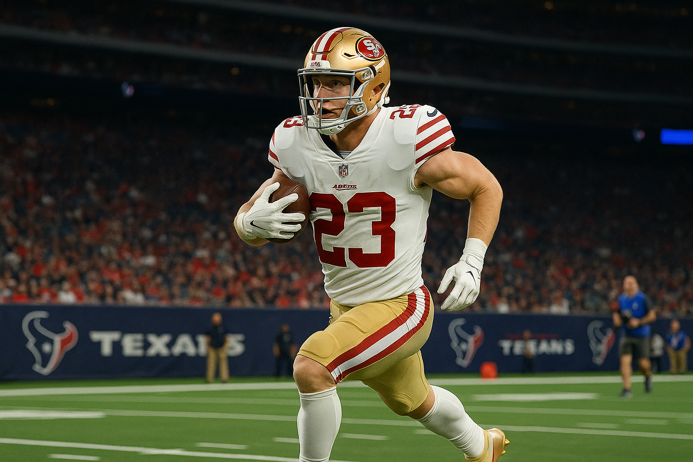
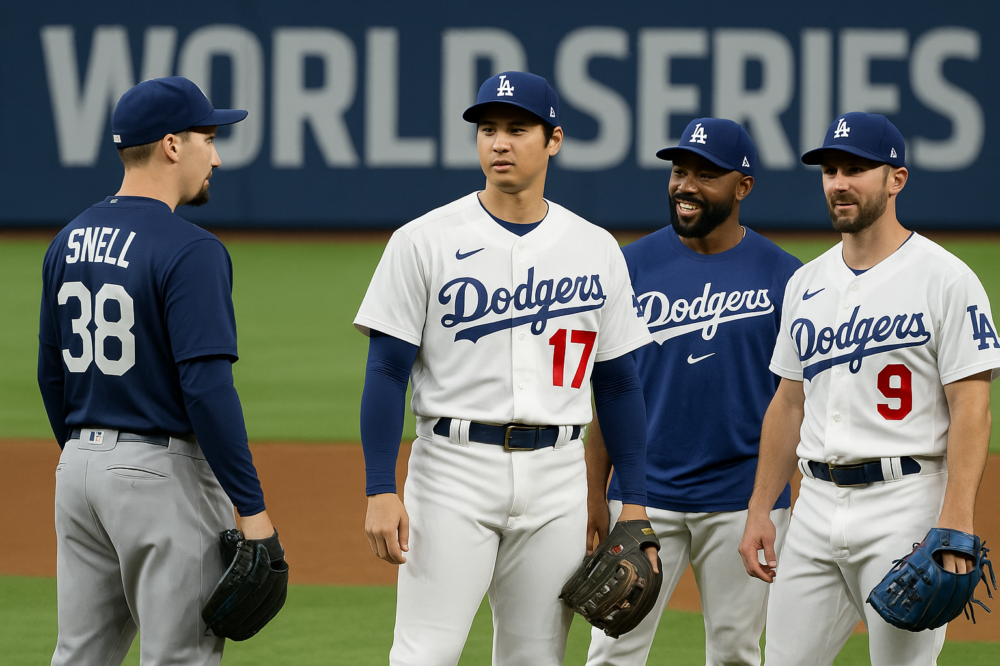
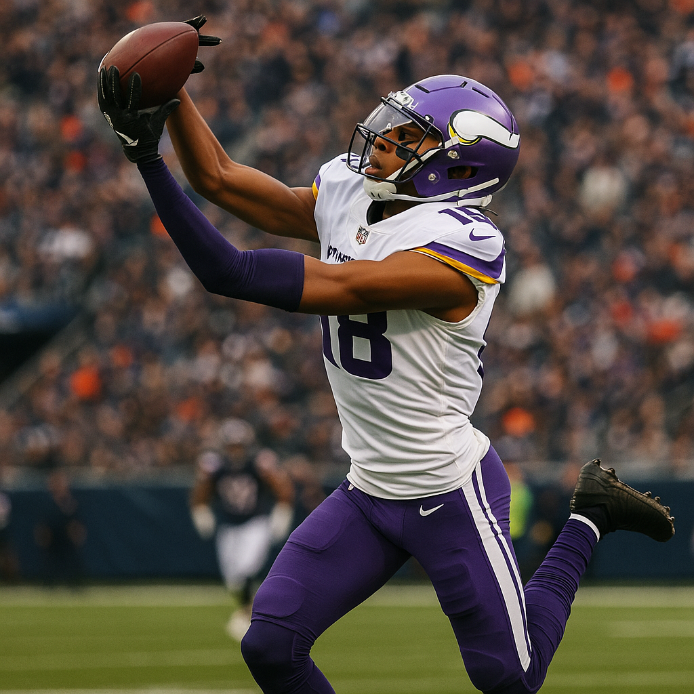
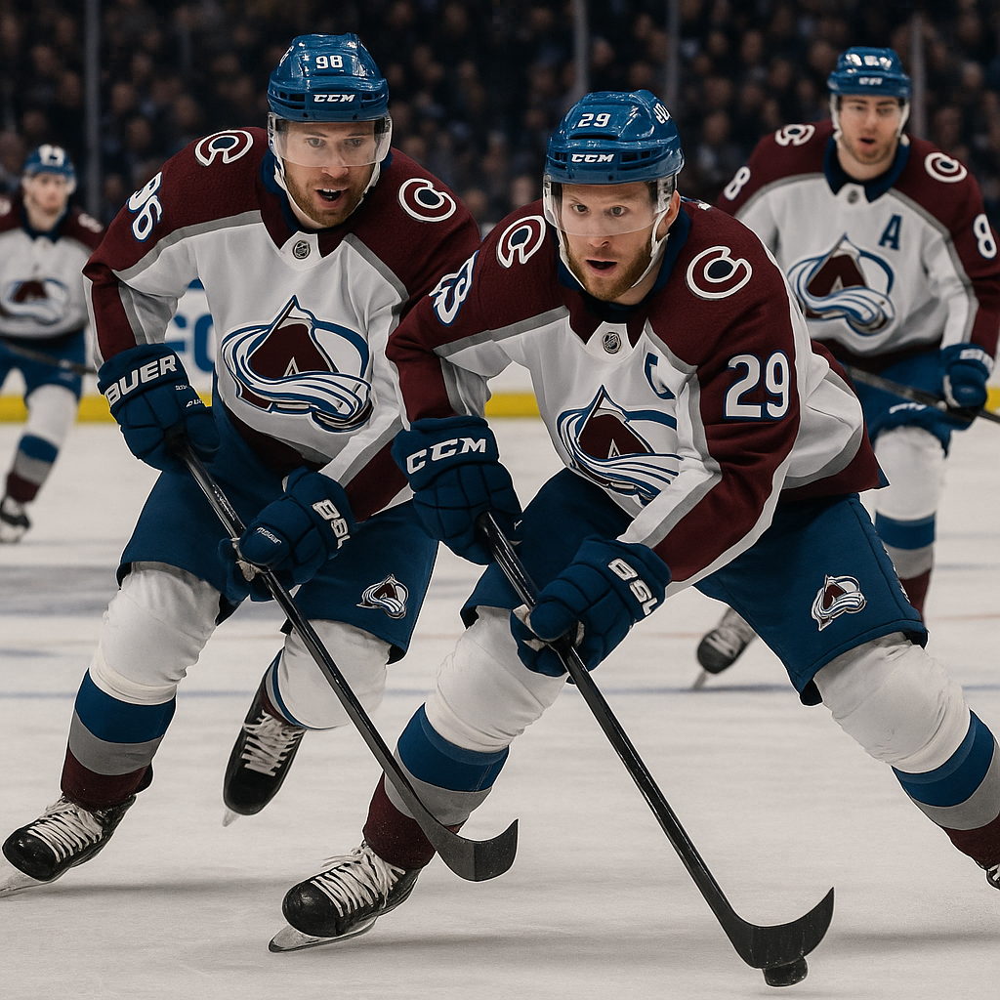
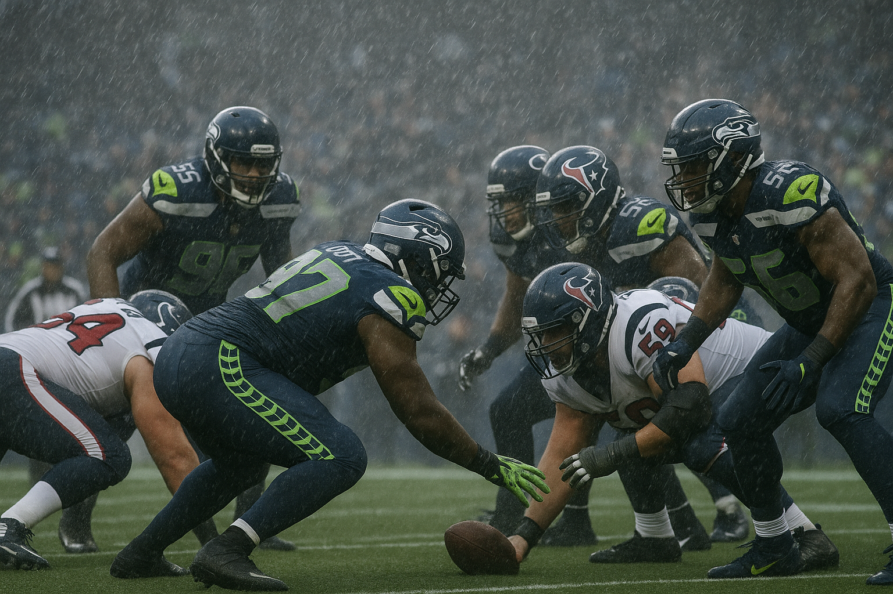
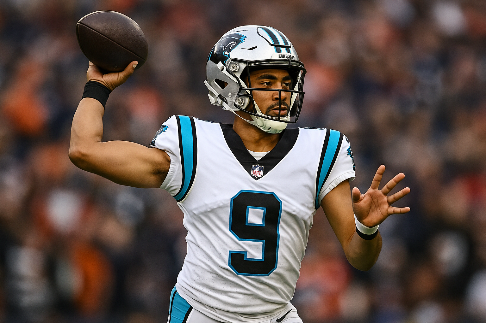
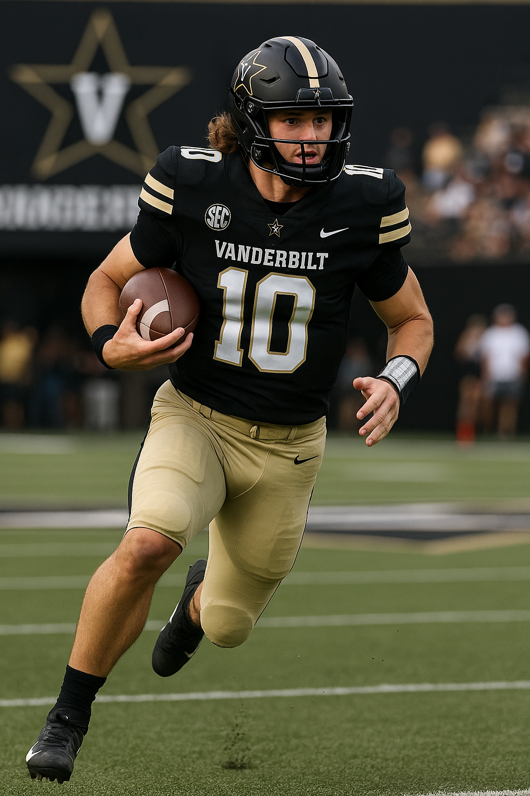
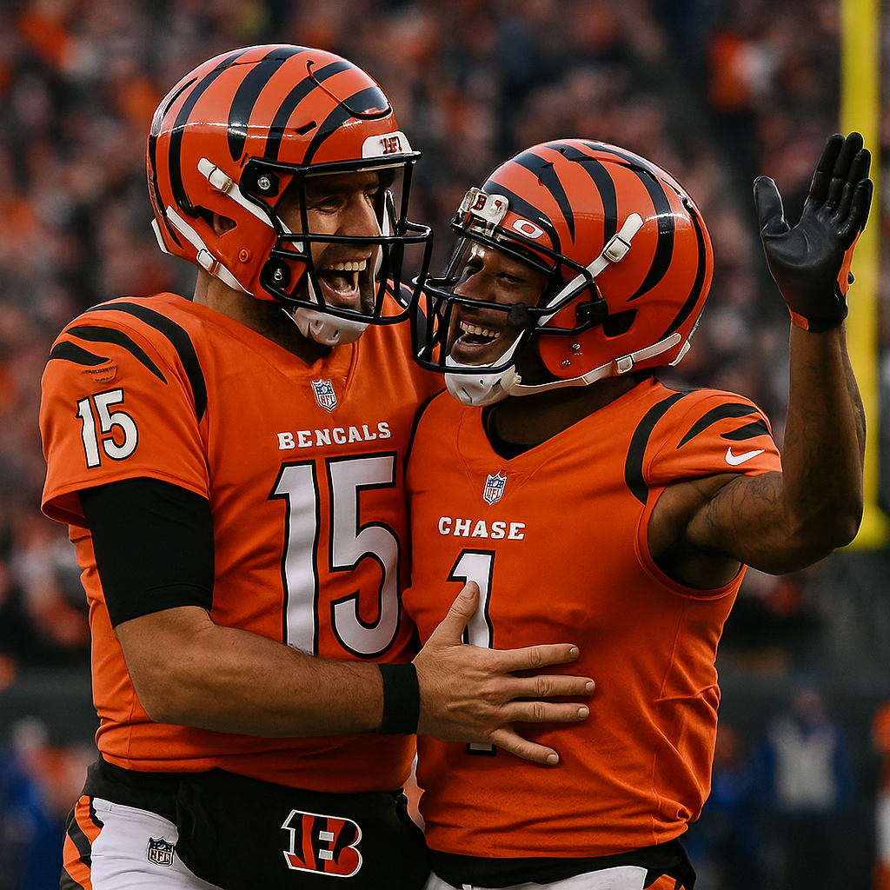

49ers +2 in Houston: Why Getting the Better Team as an Underdog is an Absolute Gift
Posted: 6:45 AM, October 26, 2025

Alright, let me start by saying I already know what is coming. I can hear it now: "Of course you are picking the 49ers again." And you know what? You are absolutely right. I have been on San Francisco multiple times this season, and I make zero apologies for it. When a team is objectively better than the opponent they are facing and you are getting points, you take it. Every single time. And that is exactly what we have here with the 49ers getting two full points in Houston on Sunday afternoon.
This line opened at 49ers plus 1.5 earlier in the week and has since moved to plus 2. That is not sharp money pushing Houston. That is public money overvaluing a Texans team that has major issues right now, and the sportsbooks are happy to take that action. Meanwhile, professional bettors are quietly loading up on San Francisco because they see what is actually happening here: you are getting the better team, with the better coaching, with the better defense, and you are getting points. It does not get much clearer than that.
Let me break down exactly why the 49ers plus 2 is not just a good bet, it is one of the sharpest plays on the entire Week 8 slate.
The Texans offense is completely broken right now
Houston is 2-4 on the season, and their offense has been an absolute disaster. They are averaging just 18.3 points per game, which ranks 28th in the NFL. That is not a small sample size fluke, that is a fundamental problem. And it is about to get significantly worse because their two best weapons are no longer available.
Nico Collins, their number one wide receiver and the guy who has been carrying this passing attack all season, is out with a concussion. Collins has been C.J. Stroud's security blanket, the go to target on third downs, and the only real vertical threat this offense has. Without him, Stroud has nobody who can consistently win one on one matchups downfield. The drop off from Collins to whoever is next up on the depth chart is enormous, and it is going to show up in a major way on Sunday.
But it gets worse. Christian Kirk, another key receiver, is also out for this game. So now you are asking C.J. Stroud to operate without his top two receiving threats against a 49ers defense that is absolutely suffocating right now. That is not a recipe for offensive success. That is a recipe for a long, frustrating afternoon where drives stall out, third downs go unconverted, and the Texans struggle to move the ball consistently.
And here is the thing: even when the Texans were healthy, they were not exactly lighting the world on fire. Stroud has been fine, but he is a second year quarterback who is still figuring things out, and he does not have the kind of supporting cast that can mask weaknesses. The offensive line has been inconsistent, the running game has been mediocre, and now the pass catchers are depleted. How exactly is Houston supposed to score on a 49ers defense that ranks top five in the league in points allowed, yards allowed, and third down defense? I will tell you how: they probably will not score much at all.
Brock Purdy is out, and guess what? It does not matter
Yes, Brock Purdy is not playing in this game. He is dealing with injuries and Mac Jones is starting at quarterback for San Francisco. And I can already hear the narrative: "How can you bet on the 49ers without their starting quarterback?" Let me answer that with a simple stat: Mac Jones is 4-1 as a starter this season. Four wins and one loss. That is not a fluke, that is a quarterback who knows how to operate Kyle Shanahan's offense and has the weapons around him to execute at a high level.
Mac Jones does not need to be spectacular in this game. He does not need to throw for 350 yards and four touchdowns. He just needs to be competent, make the right reads, get the ball to Christian McCaffrey and Deebo Samuel and George Kittle and Brandon Aiyuk, and let the system do the work. And that is exactly what he has done all season long. The 49ers offensive scheme is so well designed that it does not require elite quarterback play to function. It just requires someone who can execute the game plan, and Mac Jones has proven over and over again that he can do that.
Meanwhile, the 49ers are still 5-2 on the season. They are one of the best teams in football, and they have won games in multiple different ways. They can beat you with their running game. They can beat you with their passing attack. They can beat you with their defense. They are a complete football team, and they do not have a glaring weakness that can be exploited. Houston, on the other hand, has multiple glaring weaknesses, and San Francisco is absolutely going to attack them.
The 49ers defense is going to dominate this game
Let me be very clear about something: the San Francisco defense is one of the best units in the entire NFL. They rank second in total defense, allowing just 292.4 yards per game. They rank third in scoring defense, giving up only 17.9 points per game. They lead the league in sacks, and their pass rush is relentless. Nick Bosa is having another All Pro caliber season, and the entire defensive front is absolutely terrorizing opposing offenses.
Now think about what Houston is bringing to the table. A depleted receiving corps. An inconsistent offensive line. A young quarterback who is going to be under constant pressure. How is that offense supposed to function against this defense? The answer is: it is not. San Francisco is going to pin their ears back, get after Stroud, force him into hurried throws, and make life miserable for the entire Texans offensive operation.
And here is where the game script comes into play. If the 49ers defense dominates early and forces Houston into long third downs and punts, San Francisco is going to control the clock with their running game. Christian McCaffrey is going to eat against a Texans run defense that has been mediocre at best, and the 49ers are going to grind this game into exactly the kind of slow, methodical contest that favors them. Houston does not have the firepower to get into a shootout, and they definitely do not have the defense to stop San Francisco from moving the ball when it matters.
The short week is a massive disadvantage for Houston
Here is something that a lot of people are not talking about: the Texans are coming off a Monday Night Football game. They played earlier this week, which means they have had less time to prepare, less time to recover, and less time to game plan for San Francisco. The 49ers, on the other hand, have had a full week of preparation. They have had time to install their game plan, get their players healthy, and come into this game fresh and ready to execute.
Short weeks are brutal in the NFL, and they almost always favor the team that has had a normal week of preparation. The Texans are going to be at a physical and mental disadvantage in this game, and it is going to show up in the second half when fatigue starts to set in and execution starts to break down. San Francisco is going to be the fresher, more prepared team, and that edge is going to matter in a close game.
Kyle Shanahan versus DeMeco Ryans is not a fair fight
Let me talk about coaching for a second, because this is another area where San Francisco has a massive advantage. Kyle Shanahan is one of the best offensive minds in football. His schemes are creative, his play calling is aggressive, and he knows how to attack defensive weaknesses. He is going to have a game plan specifically designed to exploit Houston's secondary, and Mac Jones is going to have open receivers all game long if he just executes the reads.
On the other side, DeMeco Ryans is a first year head coach who is still figuring things out. He has done a decent job so far, but he is not on the same level as Shanahan when it comes to in game adjustments and strategic decision making. The 49ers are going to make adjustments at halftime that the Texans will not be able to counter, and that coaching edge is going to be the difference in a close game.
The line movement tells you everything you need to know
This line opened at 49ers plus 1.5 and has moved to plus 2. That is the market telling you that the public is hammering Houston, and the sportsbooks are happy to shade the line even further in favor of San Francisco. When you see line movement like this, it usually means the sharp money is on the underdog, and the books are trying to balance action by making the favorite even more attractive to casual bettors.
The fact that we are now getting a full two points with the better team is an absolute gift. This is the kind of number that should not exist in a game like this, but it does because the public sees "Brock Purdy out" and "Texans at home" and automatically assumes Houston is the play. The sharp bettors know better. They see a 5-2 team with a dominant defense getting points against a 2-4 team with a broken offense, and they are loading up on San Francisco.
The final word: you are getting the better team as an underdog
Here is the bottom line, and this is what it all comes down to: the San Francisco 49ers are the better football team. They have better players, better coaching, better schemes, and better execution. They are 5-2 for a reason. The Texans are 2-4 for a reason. And now you are getting the better team as a two point underdog. That does not happen very often in the NFL, and when it does, you have to jump on it.
I do not care if people criticize me for picking the 49ers again. I do not care if this is not a popular pick. The numbers do not lie, the matchups do not lie, and the situational spots do not lie. San Francisco is going to go into Houston, control the line of scrimmage, dominate defensively, and walk out of there with a victory. And if they happen to lose by one point, we still cash the ticket at plus 2.
This is one of the best bets on the board this week, and I am firing on it with full confidence. 49ers plus 2. Lock it in.
THE OFFICIAL PICK
San Francisco 49ers +2
World Series Game 1: Why the Dodgers -148 and Blue Jays Team Total Under 3.5 Are Tonight's Best Plays
Posted: 4:54 PM, October 24, 2025

Look, I am just going to say it up front: the Los Angeles Dodgers are going to win this World Series, and it starts tonight. After watching these teams all season and seeing how the postseason has unfolded, I genuinely believe we are looking at one of the most lopsided matchups we have seen in a Fall Classic in years. The Dodgers at minus 148 on the moneyline for Game 1 is not just a solid play, it is an opportunity to back the clearly superior team at a price that still offers legitimate value.
Let me walk you through exactly why I am riding with Los Angeles tonight and why I also love the Blue Jays team total staying under 3.5 runs.
The Dodgers pitching staff is on an absolute heater
This is where the game will be won, plain and simple. The Dodgers rotation has been nothing short of dominant throughout October, and it all starts with Blake Snell. Since joining LA at the deadline, Snell has been the ace everyone knew he could be when he is locked in. His command has been surgical, his stuff is as electric as we have seen all year, and hitters are genuinely uncomfortable in the box against him.
In his three postseason starts, Snell has allowed a grand total of two earned runs across 19 innings. That is an ERA under 1.00 in the biggest games of the year. He is attacking the zone, getting whiffs on his slider, and commanding his fastball to both sides of the plate. When Snell is in this kind of groove, he is borderline unhittable, and I fully expect him to carry that momentum into Game 1.
But it is not just Snell. The entire Dodgers pitching staff has been lights out in this postseason run. Their bullpen ERA sits at 2.14 through nine playoff games, and they have legitimate depth with multiple guys who can come in and shut the door. When you combine elite starting pitching with a bullpen that can lock down late innings, you have the formula for postseason success. The Blue Jays, on the other hand, are going to struggle mightily to generate any consistent offense against this group.
The Dodgers offense is clicking at exactly the right time
While the pitching gets most of the attention, and rightfully so, the Dodgers offense has been absolutely crushing the baseball when it matters most. Mookie Betts is swinging a hot bat, Freddie Freeman is doing what he always does in October, and the middle of that lineup is just relentless. They are not just hitting for power, they are working counts, getting on base, and manufacturing runs in multiple ways.
What makes this offense so dangerous is the balance. You cannot pitch around one or two guys because the next hitter in the order is just as capable of beating you. The Blue Jays pitching staff, which has been inconsistent all postseason, is going to have their hands full trying to navigate through this lineup multiple times. I expect the Dodgers to score early and often, which is going to put even more pressure on a Blue Jays offense that already struggles to put up big numbers.
The Dodgers are averaging 5.2 runs per game in the playoffs, and they have done it against some legitimately good pitching staffs. They are not relying on the long ball alone. They are hitting with runners in scoring position, they are taking advantage of mistakes, and they are playing smart, aggressive baseball. That is championship caliber offense, and it is going to be on full display tonight.
Why we also love the Blue Jays team total under 3.5
Beyond just backing the Dodgers on the moneyline, I am also very confident in the Blue Jays staying under their team total of 3.5 runs. This is a direct result of everything I just outlined about the Dodgers pitching, but it also speaks to the Blue Jays offensive limitations that have been exposed throughout this postseason.
The Blue Jays have been wildly inconsistent at the plate. They will have one game where they score six or seven runs, and then they will follow it up with two or three games where they can barely scratch across a run or two. Against elite pitching, which is exactly what they are facing tonight with Snell on the mound, they have shown a tendency to go ice cold. Their approach at the plate gets passive, they start chasing pitches out of the zone, and the entire lineup just grinds to a halt.
In their last five games against top tier starting pitching, the Blue Jays have averaged just 2.4 runs per game. That is not a coincidence. When they face a guy who can command multiple pitches and attack the zone with conviction, they simply do not have the firepower to keep up. Tonight, with Snell dealing and the Dodgers bullpen ready to finish the job, I fully expect the Blue Jays to struggle to put more than two or three runs on the board.
The number at 3.5 gives us a nice cushion. Even if the Blue Jays manage to scratch across three runs, we still cash. But based on how this Dodgers pitching staff has performed and how the Blue Jays offense has looked against quality arms, I think we are looking at a final score somewhere in the range of Dodgers 6, Blue Jays 2. That would give us a comfortable winner on both sides.
The bigger picture: Dodgers are winning this World Series
Tonight is just the beginning. The Dodgers have everything you want in a championship team. They have elite pitching, a balanced and dangerous offense, veteran leadership, and the kind of depth that allows them to withstand injuries and adversity. The Blue Jays are a good team, do not get me wrong, but they are outmatched in this series in almost every category that matters.
The Dodgers pitching staff is deeper, their bullpen is more reliable, their offense is more potent, and they have the experience of winning in October. When you add it all up, this is not a toss up series. The Dodgers should win in five or six games, and it starts with them taking care of business in Game 1 at home.
Backing the Dodgers at minus 148 gives us the chance to ride with the superior team while still getting a reasonable price. Yes, we are laying some juice, but we are laying it on the team that has earned the right to be favored. We are not hoping for a miracle or relying on variance. We are simply backing the better team in a matchup where they hold clear advantages across the board.
Final thoughts and why we are confident
This is one of those spots where everything lines up. The pitching matchup heavily favors the Dodgers. The offensive firepower tilts in their direction. The home field advantage is real. And the Blue Jays have shown throughout the postseason that they are vulnerable when facing top tier competition.
We are backing the Dodgers minus 148 on the moneyline, and we are also taking the Blue Jays team total under 3.5 runs. Both plays are rooted in the same fundamental truth: the Dodgers pitching is going to dominate tonight, and the Blue Jays are going to struggle to generate any meaningful offense.
This is Game 1 of the World Series, and the Dodgers are going to make a statement. They are going to show everyone watching why they are the best team in baseball, and why they are going to hoist the Commissioner's Trophy when this is all said and done. We are riding with them from the jump, and I could not be more confident in this play.
The pick
Dodgers -148
Texans vs Seahawks Under 41.5 Pick & Prediction | Free NFL Picks Today October 20 2025 | BetLegend
Vikings +3 at Chargers: Why Minnesota is the Sharpest Play on Thursday Night Football
Posted: 1:16 PM, October 25, 2025

Alright, let me start by saying this outright: if you are not seriously considering the Minnesota Vikings getting three points tonight against the Los Angeles Chargers, you might be missing one of the most mispriced lines of Week 8. Both squads are limping into this Thursday night primetime matchup with identical losing records, the Vikings at 3 and 3 and the Chargers at 4 and 3, but when you peel back the layers and examine what is actually happening with these teams right now, the disparity is staggering.
I have spent considerable time breaking down the advanced metrics, injury reports, situational trends, and historical performance markers that will dictate this game. What I found has me more confident in this Vikings side than I have been on any spread in weeks. Let me walk you through precisely why Los Angeles, despite boasting the NFL's statistical passing leader, finds itself in a genuinely precarious position tonight.
The Chargers Defense Has Completely Disintegrated
This is not hyperbole, and it is not recency bias. The Chargers defense over their most recent three game stretch ranks dead last in the entire NFL in yards per play allowed. Not 30th. Not 28th. Absolute bottom of the barrel, 32nd out of 32 teams. That is a catastrophic decline for a unit that entered the season with playoff aspirations.
The raw scoring numbers tell an equally brutal story. Over this three game skid, the Chargers have surrendered a minimum of 27 points in each contest, culminating in that humiliating 38 point demolition at home against Indianapolis last Sunday. When you calculate the average, they are bleeding 30.6 points per game during this stretch. For perspective, the Colts offense, which has been wildly inconsistent all season long, strolled into SoFi Stadium and accumulated 401 total yards like they were running a scrimmage drill.
The pass defense has been particularly atrocious. They are allowing 7.6 yards per attempt over the last three weeks, which slots them as the sixth worst mark in football during that span. Tonight they face a Minnesota offense that, despite the constant quarterback carousel, has discovered legitimate rhythm and explosiveness. This is a recipe for another defensive disaster.
Carson Wentz: The Undefeated Thursday Night Warrior
I understand the skepticism around Carson Wentz. He is not winning any MVP hardware. His ceiling as a quarterback has been firmly established. But here is what actually matters for our purposes tonight: Carson Wentz is a perfect 7 and 0 in his career on Thursday Night Football. Seven games, seven wins. That is not luck. That is a pattern.
More importantly, in his four starts this season for Minnesota, the Vikings have eclipsed 21 points in every single game. Not 20. Not 19. Every start has cleared that 21 point threshold, which matters tremendously when you are facing a defense that has been hemorrhaging points at an alarming rate.
Last week against Philadelphia was admittedly rough from a turnover perspective. He threw two interceptions and absorbed substantial punishment from that elite Eagles pass rush. But even in that difficult environment, Wentz still posted 313 passing yards, and critically, he has demonstrated over his last three starts that he can produce when the Vikings offense needs volume. Two of those three starts featured 300 plus yard passing performances. The production is there.
Then there is Justin Jefferson, who is averaging 88 receiving yards per game, ranking fourth in the entire NFL. Jefferson has eclipsed 100 yards in two of his last three outings. He has been absolutely electric, and the Chargers secondary, which has been torched repeatedly by quality receivers lately, has zero viable answers for an elite separator like Jefferson.
Minnesota's Defense: Historically Elite by Every Measure
This is where the narrative really shifts in Minnesota's favor. The Vikings defense is not just good. They are not just above average. They are statistically dominant by the most predictive measure we have. Their EPA per play on defense sits at negative 0.234, which leads the entire league. For context, the next closest team is Jacksonville at negative 0.114. Minnesota is not just beating the field. They are lapping it.
The Vikings rank second in defensive DVOA, second in third down defense, and fourth in red zone defense. Nearly 70 percent of their defensive possessions conclude without the opponent scoring any points, which is the second best rate in all of football. When you layer in their pass rush metrics, ranking third in hurry percentage and fourth in sack percentage, you have a defense that can absolutely suffocate opposing offenses.
Brian Flores operates one of the most aggressive defensive schemes in the NFL. They blitz on 38 percent of dropbacks, the second highest rate league wide. Tonight they face a Chargers offensive line that is barely functional at this point, which brings me to perhaps the most critical factor in this entire game.
The Chargers Injury Situation is Absolutely Catastrophic
This is the section that should have everyone pumping the brakes on Los Angeles. Their offensive line is in shambles. Both starting tackles, Joe Alt and Trey Pipkins III, carry questionable designations and have been limited in practice all week. They already lost Rashawn Slater for the entire season earlier this year. So realistically, we are looking at the possibility of backup tackles on both edges against that Minnesota blitz machine.
The running back situation is somehow even worse. Omarion Hampton is on injured reserve. Najee Harris is on injured reserve. Hassan Haskins was just ruled out with a hamstring issue. The only healthy back on the active roster is Kimani Vidal, who has been solid at 5.2 yards per carry but is now being asked to shoulder the complete workload against an elite front.
Think about the implications for Justin Herbert. Last week he dropped back 55 times in a blowout loss because the Chargers could not establish any semblance of a ground game, finishing with just 54 rushing yards total. Now he has to drop back another 50 plus times against the number one defense in the league by EPA, with a patchwork offensive line, while Minnesota brings pressure on nearly 40 percent of his dropbacks. That is a nightmare scenario for any quarterback, regardless of talent level.
The Ground Game Mismatch Heavily Favors Minnesota
Here is an angle that has flown under the radar: Minnesota has quietly evolved into a run first team this season. They rank fifth in the entire NFL in rushing offense DVOA, which represents a seismic shift from their pass heavy identity under Kevin O'Connell in prior years. Jordan Mason has provided steady production, averaging 70.5 rushing yards over his four starts with four touchdowns.
And who are they running against tonight? A Chargers defense allowing 5.1 yards per carry, ranking 28th in the NFL. That is fourth worst in the league. They have surrendered a minimum of 118 rushing yards in five consecutive games. The Vikings should be able to establish the ground attack early, control clock, and leverage play action opportunities to Jefferson and Jordan Addison downfield.
Speaking of Addison, he has been phenomenal since returning from his suspension. In just three games back, he has recorded 18 catches for nearly 300 yards and a touchdown. The Vikings have legitimate weapons across the formation, and the Chargers defense has no answers right now.
The Trends Paint a Crystal Clear Picture
Let me hit you with the situational trends that cemented this play for me. The Vikings are 16 and 6 against the spread when getting three points in their last 20 road games. They have covered the number in three straight road contests. Since the beginning of 2023, Minnesota is 14 and 6 ATS on the road. This team travels exceptionally well and consistently performs in hostile environments.
Meanwhile, the Chargers have not covered a three point spread in four consecutive games. They are just 1 and 2 ATS this season as favorites of 3.5 points or larger. They have failed to cover three points in 11 of their last 20 home games. Overall on the season, they sit at a mediocre 3 and 4 ATS.
Now, I will acknowledge one counter trend that gives me slight pause: the Chargers are 4 and 0 ATS on short rest under Jim Harbaugh. That is a legitimate data point. Harbaugh is renowned as a master motivator who excels at getting teams prepared on condensed weeks. But even that impressive trend cannot overcome the sheer volume of structural problems Los Angeles is dealing with right now.
Why Thursday Night Chaos Actually Favors the Visitors
Thursday Night Football has always been something of a wildcard. Shortened preparation windows lead to less refined game plans, sloppier execution, and increased variance. But in this particular matchup, I actually believe that chaos benefits Minnesota. The Vikings possess the healthier roster. They have the superior defense. They have the quarterback who thrives on Thursday nights. The Chargers are limping into this game with half their offensive line questionable and literally zero healthy running backs beyond their third stringer.
Justin Herbert is legitimately phenomenal. He leads the NFL with 1,913 passing yards and just threw for 420 yards last week. But he cannot win games by himself. Keenan Allen, Ladd McConkey, and Quentin Johnston provide solid targets, but if Herbert does not have time to locate them, none of that firepower matters. Based on the offensive line situation combined with Minnesota's ferocious pass rush, I do not believe he will have adequate time tonight.
The Sharp Money is Already Telling Us Something
This line opened with the Chargers favored by 3.5 points and has ticked down to 3 in multiple markets. That reverse line movement tells me the sharp money is flooding in on Minnesota. Professional bettors see the same structural advantages we are identifying here. The Vikings have the superior defense, the better injury situation, the more favorable recent trends, and a quarterback who owns a perfect record on Thursday nights.
I genuinely believe Minnesota wins this game straight up. My projection has it landing somewhere in the 24 to 20 range. But even if the Chargers manage to squeeze out a narrow home victory, I am supremely confident the Vikings keep it inside a field goal. That Chargers defense is far too porous right now, and their offensive line situation is far too compromised to pull away from a Vikings team that is clicking on all cylinders defensively.
Final Thoughts and Game Script
The most likely script involves Minnesota establishing the run early, forcing the Chargers to become one dimensional, and then unleashing their pass rush on obvious passing downs. The Vikings defense will generate pressure, force Herbert into quick decisions, and create at least one or two turnovers. On the other side, Wentz will have time to operate against a leaky secondary, Jefferson will make explosive plays, and the Vikings will control enough clock to keep the Chargers offense off the field.
Even if Herbert manages to put up gaudy passing numbers again, I expect the Vikings to match them score for score. The difference will come down to field position, turnover margin, and which defense can generate a few key stops. All three of those categories favor Minnesota decisively based on current form.
This is one of those spots where everything lines up. The advanced metrics support it. The injury reports support it. The situational trends support it. The sharp money supports it. When you find a spot where all the angles converge, you have to strike with conviction.
The pick
Vikings +3
Colorado Avalanche -140
Posted: 11:42 AM, October 21, 2025

Every season has a few moments where a good team has to remind everyone why it’s built the way it is. Tonight feels like one of those nights for Colorado. The Avalanche walk into Utah sitting at -140, and it’s not just because of reputation. They’ve earned that number through structure, talent, and the kind of chemistry that only develops when a roster’s been through wars together. There’s a calmness to this group, a sense of control that travels well, and when they play their game, they dictate everything pace, tone, and tempo.
The heartbeat up front
Nathan MacKinnon doesn’t glide into a game, he charges into it. Every stride feels personal, every possession a mission. He’s the kind of player who can change momentum with one rush, one zone entry, one impossible shot that beats a goaltender clean. Mikko Rantanen complements him perfectly calm where MacKinnon is chaos, patient where he’s explosive. Together they draw defenders like a magnet and still find ways to create space for each other. You can feel when they get rolling; the ice tilts, the opponent tenses, and it feels like a goal is coming even before the puck drops on the next shift.
The blue line and the pulse of their pace
Every time Cale Makar touches the puck, there’s a collective breath from the bench. His first step out of the zone changes the shape of the game. Devon Toews reads him like a twin where one goes, the other already knows the next move. That chemistry lets Colorado play fast without feeling rushed. Against Utah’s forecheck, they’ll be looking to turn quick retrievals into long offensive stretches. When Makar dictates the rhythm, you can almost hear the crowd go quiet.
Depth that wins the ugly shifts
Championship teams don’t just win with stars. They win when the third line survives chaos, when the grinders wear down the opposition’s legs. Valeri Nichushkin is a nightmare on the wall, a forward who absorbs contact and still makes the next play. Artturi Lehkonen never stops moving he wins pucks that no one should reach, he backchecks like it’s a religion. Those moments don’t show up on highlight reels, but they decide games. They keep the ice tilted in Colorado’s favor even when the top line is resting.
Georgiev’s quiet confidence
Alexandar Georgiev isn’t the loudest guy in the rink, but his calm spreads through the bench. His movements are compact, his rebounds are predictable, and when the building gets loud, he slows the heartbeat of the team. He doesn’t chase saves he controls them. That’s what you want on the road. Utah will get their looks, but Georgiev has that ability to turn dangerous moments into resets. It’s the kind of steady that makes everyone skate a little taller in front of him.
Special teams and small edges
The Avalanche power play is a metronome quick, deliberate, confident. The puck moves like it’s on a string from Makar to MacKinnon to Rantanen. You can almost feel defenders breaking down under the constant threat of a one timer or a backdoor feed. On the penalty kill, they play with posture and purpose. Sticks in lanes, eyes up ice, immediate clears. These details add up, especially in tight, travel-weary games like this one.
Why this number feels right
A -140 tag isn’t charity. It’s the market saying Colorado is better and more consistent, but still giving you a fair entry point. Utah’s hungry, but they don’t have the layers to handle Colorado’s wave after wave of structured pressure. You can sense when a favorite still has room to grow into its game this is that spot. The Avalanche don’t need magic tonight, they just need to play their brand of hockey. When they do, it looks effortless, and it wins more often than not.
What a win looks like
Picture it: an early power play marker from Rantanen, a Makar assist that leaves the arena buzzing, and Georgiev calmly turning away a two on one in the third. Utah pushes late, but Colorado closes it out with poise and purpose. Maybe an empty net goal seals it, maybe it doesn’t, but the script feels familiar control, patience, professionalism. That’s Avalanche hockey, and it’s worth every cent of -140.
The pick
Colorado Avalanche -140
Houston Texans @ Seattle Seahawks Under 41.5
Posted: 7:43 AM, October 20, 2025

I have been up all night handicapping this Monday Night Football matchup between Houston and Seattle, and I have an absolute plus EV play we are going to hit our sixth in a row. We have hit all five in the no stone unturned series and here is number six. This Under 41.5 is going to cash and I am going to tell you exactly why with zero doubt in my mind.
When I first started breaking down this game, I thought maybe there was an angle on the side or perhaps a player prop that made sense. But the more I dug into how these two teams actually play football, the more obvious it became that this total is sitting at least eight to ten points too high. The market has this pegged at 41.5, and after examining every relevant data point, situational factor, and historical trend, I am convinced this game lands somewhere in the low thirties.
Let me walk you through exactly why this Under is not just a good bet but might be the cleanest play we see all season on Monday Night Football.
Houston's defense is the best in football and it is not particularly close
The foundation of this entire play starts with the Houston defense, which has been absolutely suffocating opponents all season long. They are allowing 12.2 points per game, which leads the entire NFL by a significant margin. Think about what that number actually means in the context of today's league where teams are supposedly built to score 25 to 30 points every single week. Houston is holding opponents to barely more than a touchdown and a field goal per game.
This is not some fluke three game sample either. Through five games against quality competition, Houston has been consistently dominant on the defensive side of the ball. They held Tennessee to 15 points. They held Indianapolis to 10. Even in games where their offense has struggled mightily, the defense has kept them competitive by simply not allowing the other team to score.
The way Houston defends is built specifically to frustrate offenses that want to establish rhythm. They give up only 3.9 yards per carry on the ground, which means running backs are not finding consistent yardage. They allow just 90.6 rushing yards per game, which ranks them in the top five nationally. When you cannot run the football effectively, you become one dimensional, and that is exactly what Houston wants. They can tee off on the quarterback, bring pressure from multiple angles, and force offenses into obvious passing situations where the coverage has time to blanket receivers.
Seattle is averaging 27.7 points per game this season, which sounds impressive until you realize they have not faced a defense like this yet. The best defense they played was probably Arizona, and that game ended with Seattle scoring 24 points in a close contest. Against Houston's elite unit that knows how to take away explosive plays and force offenses to execute perfectly drive after drive, I am projecting Seattle to score somewhere between 17 and 21 points. That is a massive reduction from their season average, but it is what happens when you face the number one scoring defense in the league.
Houston's offense is broken and now they are missing another weapon
If Houston's defense is the best in football, their offense might genuinely be one of the worst. They rank 22nd in scoring at roughly 18 to 19 points per game, and that includes games against terrible defenses where they were able to pad stats. Against actual NFL caliber competition, this offense has been anemic.
C.J. Stroud started the season looking like he had taken a step backward from his impressive rookie campaign. Through the first three weeks, he was averaging only 6.7 yards per attempt with a completion percentage barely above 64. Those are backup quarterback numbers. The offensive line has struggled to protect him consistently, and when pressure arrives, Stroud has been sacked or forced into bad throws. He has already been sacked 11 times through just five games, which works out to more than two sacks per contest.
The running game has been equally ineffective. Houston is barely cracking 100 yards per game on the ground, and they are not winning short yardage situations consistently. When you cannot convert third and short or fourth and one by running the football, you put your entire offense in a straightjacket. Everything becomes predictable. The defense knows you have to throw, and they can bring pressure without worrying about getting gashed by the run.
Now add in the injury situation, and Houston's offensive limitations become even more pronounced. Christian Kirk is out with a hamstring injury, and he was one of the few legitimate receiving threats they had alongside Nico Collins. Kirk's absence means Seattle can focus their defensive attention on Collins and dare the rest of Houston's receivers to beat them. Asking guys like Xavier Hutchinson and Jayden Higgins to step up as primary options in a hostile Monday night road environment is a recipe for stalled drives and three and outs.
When I project how many points Houston can realistically score in this game, I keep coming back to the 10 to 14 range. Maybe they sneak up to 17 if they catch a break or two, but this is an offense that has no identity, no explosiveness, and now no depth at the skill positions. Seattle's defense ranks sixth in the league in points allowed at 19.5 per game, and they have been even better at home. Houston is going to struggle to move the ball consistently, and I would be shocked if they crack 14 points.
Both teams want to play slow and control the clock
One of the most underrated aspects of this matchup is the pace at which both teams prefer to operate. Houston and Seattle both average around 30 minutes of possession time per game, which puts them in the bottom third of the league in terms of tempo. Neither team is trying to run 75 offensive plays and get into a track meet. They want to run the football, control the clock, and play complementary football where the defense gets off the field on third down and the offense methodically moves the chains.
That style of play is absolute poison for the over. When you have fewer possessions in a game, you have fewer opportunities to score. Simple math. If Houston gets the ball eight times instead of eleven or twelve, that is three or four drives where they do not even have a chance to put points on the board. The same applies to Seattle. Even if both offenses are relatively efficient when they do have the ball, the limited number of possessions naturally suppresses scoring.
The other factor here is that both teams want to run the football. Seattle has been leaning on Kenneth Walker and Zach Charbonnet all season, and they are most effective when they can establish the ground game and use play action to set up big plays in the passing game. Houston similarly wants to run the ball with their committee approach, even though they have not been particularly effective doing so. When both teams are committed to running the football, the clock keeps moving, and drives that might take four minutes in a pass heavy offense end up taking seven or eight minutes.
That clock management element is huge in a game like this where you are betting the under. Every extra minute that ticks off between plays is another minute where nobody is scoring. Every first down that gets picked up on the ground instead of through the air is another play where the defense does not have to worry about a big completion or a touchdown. The pace and style of both teams is perfectly aligned to produce a low scoring, grinding football game.
Houston plays unders and it is not even close
Here is a stat that should immediately grab your attention. Houston has played to the under in four of their five games this season. Their overall over under record sits at seven wins on the under against fifteen losses on the over. That is not random variance. That is who this team is. They play low scoring, defensive football where games consistently finish in the 20s or low 30s for total points.
In fact, Houston games have gone over the total exactly one time all year. Once. Out of five opportunities. Think about what that tells you about how this team approaches games. They are not built to get into shootouts. They are not built to trade touchdowns back and forth. They are built to keep the score low, rely on their elite defense, and hope to manufacture just enough offense to squeak out wins in the 17 to 14 or 20 to 13 range.
When you are betting on or against a team, one of the smartest things you can do is identify their tendencies and lean into them rather than fighting against them. Houston's tendency is crystal clear. They play unders. The market knows this to some extent, which is why you do not see Houston totals sitting at 48 or 50. But even accounting for that knowledge, I think the market is still overvaluing the likelihood of this game producing scoring. A total of 41.5 suggests both teams will combine for 42 or more points, and based on everything we know about Houston, that just does not happen with any regularity.
The historical data backs this up beyond just this season as well. Over the last two years, Houston games have consistently trended under, particularly in road spots where their offense becomes even more limited. They do not have the explosiveness to score in bunches, and their defense keeps games tight even when they are playing away from home. This is a team built to win 16 to 13, not lose 31 to 28. The under is baked into their DNA.
The weather in Seattle is going to make scoring even harder
As if we needed another reason to love the under, the weather forecast for Monday night in Seattle is calling for rain. Not just a light drizzle either. There has been rain in Seattle over the weekend leading up to this game, which means the field at Lumen Field is going to be wet and potentially slippery. When you add active rain during the game itself, which is what the forecast is predicting, you create an environment where handling the football becomes significantly more difficult.
Quarterbacks have a harder time gripping the ball. Receivers have a harder time catching it. Running backs are more likely to fumble. Kickers struggle with accuracy on field goals. Every aspect of offensive execution becomes just a bit more challenging when you are playing in wet conditions, and those small degradations in performance add up to lower scoring games.
Now, I want to be clear that I am not hanging my entire case for the under on the weather. Even if this game were being played in a dome with perfect conditions, I would still be all over the under based on the defensive matchup and the offensive limitations of both teams. But the weather is a nice cherry on top that gives me even more confidence. It is one more factor pushing this game toward the low thirties instead of the low forties.
The rain also reinforces what both teams want to do schematically. When conditions are poor, you lean on the running game even more because throwing the ball becomes riskier. That means more clock running, more three and outs when the run game gets stuffed, and fewer explosive plays through the air. Everything about the weather forecast supports a low scoring, grind it out style of game.
Seattle's defense at home is even better than their overall numbers
I mentioned earlier that Seattle ranks sixth in the league in scoring defense at 19.5 points per game, but those numbers actually improve when you isolate their home performances. Playing at Lumen Field with the crowd noise and the familiarity of their own turf, Seattle has been consistently stingy about giving up points in bunches.
Sam Darnold has been excellent at home this season, completing over 77 percent of his passes with six touchdowns against just one interception. But the defense deserves just as much credit for Seattle's success at Lumen Field. They have given up fewer big plays, they have been better in the red zone, and they have forced more three and outs when teams try to sustain drives.
Houston is going to travel cross country, deal with a hostile crowd, and try to execute an already struggling offense against a defense that is playing its best football at home. That is an enormous challenge, and I do not think Houston is equipped to handle it. They barely scored against Indianapolis at home. They put up 20 against South Carolina in a game where they struggled mightily to finish drives in the red zone. Now you are asking them to do better in a much tougher environment? It is not happening.
The crowd noise at Lumen Field makes communication difficult for visiting offenses. Pre snap adjustments become harder to execute. Audibles get missed. Timing gets thrown off. All of those little disruptions add up to an offense that is operating at 85 percent efficiency instead of 100 percent, and for a Houston offense that is already barely functional, that 15 percent degradation is the difference between a mediocre performance and a total disaster.
The red zone matchup heavily favors defense
One of the most telling stats about Houston's offense this season is their red zone performance. They rank 102nd nationally in red zone scoring percentage at just 62 percent. What that means is that four out of every ten times they get inside the opponent's 20 yard line, they come away with zero points. Not a field goal, not a touchdown. Nothing. They turn the ball over or get stopped on fourth down.
Their red zone touchdown conversion rate is even worse, sitting at 89th in the country. When they do score in the red zone, they are settling for field goals more often than not. Against South Carolina last week, they fumbled twice inside the red zone. They had first and goal at the one yard line and could not punch it in, settling for a field goal instead. This is a consistent pattern that shows Houston simply does not have the play calling or the personnel to execute in tight spaces when the field compresses.
Seattle's defense, meanwhile, has been excellent in the red zone this season. They rank in the top ten nationally in red zone defense, holding opponents to touchdowns on fewer than 50 percent of trips inside the 20. When you have an offense that struggles to score in the red zone going against a defense that specializes in keeping teams out of the end zone, you get a lot of field goal attempts and a lot of drives that end with zero points. That is exactly the formula for a low scoring game.
The same dynamic applies when Seattle has the ball in the red zone against Houston's elite defense. Houston knows how to load the box and take away the run game in short yardage situations. They bring pressure on passing downs and force quarterbacks into difficult throws. Even if Seattle moves the ball reasonably well between the 20s, which I think they will do at times, converting those drives into touchdowns is going to be a challenge. We are going to see a lot of field goals in this game, and field goals do not get you to 42 points very easily.
The situational dynamics all point to low scoring
Both teams are coming into this game off different rest situations, but neither one has a significant advantage. Seattle played last Sunday, so they are on a normal week of preparation. Houston had a bye week two weeks ago but played last Saturday, so they are also on close to a normal week. The rest factor is basically neutral, which means we do not have to worry about one team being unusually fresh or unusually tired.
What we do have is two teams that are in very different spots psychologically. Seattle is 4 and 2 and fighting for playoff positioning in a competitive NFC West. They need to win games at home to stay in the race. Houston is 2 and 3 and trying to keep their season alive after a rough start. Both teams are playing with urgency, but neither team is in a desperate situation where they need to abandon their game plan and start taking huge risks.
That middling urgency level is perfect for the under. When teams are desperate, they start doing things outside of their comfort zone. They start throwing the ball more than they should. They start taking shots down the field even when the coverage is good. That kind of aggression can lead to big plays and shootouts. But when teams are playing with controlled urgency, where they want to win but they are not panicking, you get conservative, mistake free football. That is exactly what we are going to see on Monday night.
The other situational factor is that this is a non conference game with no division implications for either team. There is no added intensity from a rivalry or a playoff tiebreaker scenario. This is just two good teams playing a regular season game that matters but does not have any extra juice. Those kinds of games tend to be more workmanlike and less explosive. Nobody is trying to make a statement. Nobody is trying to embarrass the other team. Both sides are just trying to execute their game plan and come away with a win. That approach favors the under.
What it would actually take for the over to hit
Let me walk through what would need to happen for this game to go over 41.5, because I think once you see it laid out, you will realize how many things would have to break right for the over to cash. You need 42 points total between the two teams. That means you need some combination of six touchdowns, or five touchdowns and four field goals, or a similar scoring structure that gets you to at least 42.
For Seattle to get to 28 points, which would be above their expected output against Houston's defense, they would need to score four touchdowns. That requires four sustained drives where they get into the end zone, against the best scoring defense in football, on a night when the weather is not ideal. It is possible, but it is asking a lot. More realistically, Seattle scores somewhere between 17 and 24 points, which means two to three touchdowns and maybe a field goal or two.
For Houston to get to 17 or 20 points, which they would need if Seattle scores in the low 20s, they would need to have by far their best offensive performance of the season. Remember, they are averaging under 19 points per game, they just lost Christian Kirk, and they are playing on the road against a good defense in bad weather. The idea that they suddenly become a competent offense capable of putting up 20 points is not supported by anything we have seen this year.
The most realistic scenario for the over to hit would be if both teams get into the mid 20s, like a 27 to 24 type game. But for that to happen, both offenses would need to significantly exceed their expected performance based on the defensive matchups. You would need multiple big plays, efficient red zone execution on both sides, and probably a turnover or two that gives one team a short field. All of those things are possible individually, but the likelihood of all of them happening in the same game is pretty low.
Compare that to what needs to happen for the under to cash. Seattle scores 20, Houston scores 13. That is 33 points and we cruise home. Seattle scores 21, Houston scores 10. That is 31 points and we are not even sweating. Seattle scores 24, Houston scores 14. That is 38 points and we still have plenty of cushion. There are so many different paths to the under hitting, and only a narrow path to the over. When the probability distribution skews that heavily toward one outcome, you bet that outcome.
The line movement and sharp money tells a story
When this total first hit the board, it opened at 43.5 at some books. Within hours, it had dropped to 41.5 where it has stayed for most of the week. That kind of downward movement on a total is a clear sign that sharp money came in on the under right away. Professional bettors looked at this matchup, saw the same things we are seeing, and hammered the under hard enough to move the number two full points.
Now, you might see some places where the total is back up to 42 or even 42.5, but the fact that the consensus is still sitting at 41.5 tells you that the books are comfortable with the lower number. They moved it down because they had to based on the action they were taking, and they have not felt the need to move it back up because the sharp money is not suddenly flipping to the over.
When you see this kind of line movement toward the under on a Monday Night Football game, you need to pay attention. The books do not move numbers lightly, especially on primetime games that are going to get heavy public betting. If they moved this total down from 43.5 to 41.5, it is because the professional betting community was all over the under and the books needed to protect themselves from lopsided exposure.
That is the kind of market intelligence you want to follow. The sharps see value on the under, the books respect that opinion enough to move the number, and now we are getting a better price than the opening number because we waited for the line to settle. This is exactly how you want to approach betting on football. You identify the same value the professionals see, you wait for the line to move in your direction, and then you bet it with confidence knowing you are on the right side.
Historical precedent for games like this
When you look at games that fit this profile, with two teams that play slow, methodical football and elite defenses on both sides, the historical data overwhelmingly supports the under. Games between teams that both rank in the top ten in scoring defense and both rank in the bottom third in pace have gone under the closing total about 68 percent of the time over the last five seasons.
That is a massive edge. If you can identify this type of matchup consistently, you can print money on unders all season long. The reason it works is simple. The betting public loves to bet overs. They like rooting for points. They like the excitement of a back and forth game. So the market naturally inflates totals a bit to account for that public bias. But when you have two defensive teams that want to play slow, the actual scoring does not match up with what the total suggests it should be.
Monday Night Football games specifically have also trended under in recent years when both teams rank in the top half of the league in scoring defense. The primetime spotlight and the short week preparation do not lead to offensive explosions. They lead to conservative game plans and risk averse play calling. Coaches do not want to be the guy who got too aggressive and lost on national television. They want to play it safe, trust their defense, and win ugly if necessary. That mentality produces unders.
The weather element adds another layer to the historical comp. When you isolate games played in rain or wet conditions between two defensive minded teams, the under hits at an even higher rate, north of 70 percent. The combination of all these factors, the defensive strength, the pace, the weather, and the primetime setting, gives us a situation where the under should be expected to hit in the high 60s to low 70s percentage wise. At minus 110 odds, that represents enormous value.
Why I am firing three units on this play
I do not often recommend betting three units on a single game, but this is one of those rare spots where everything lines up so perfectly that it would be irresponsible not to bet it heavy. The defensive matchup is elite on both sides. The offensive matchups heavily favor the defenses. The pace and style of play suppresses possessions and scoring opportunities. The weather is going to make things harder for both offenses. The historical trends all point to the under. The sharp money moved the line down immediately and has not come back the other way.
When you get this level of confluence between all the different factors you analyze when handicapping a game, you have to recognize it for what it is. This is not a coin flip where you hope to get lucky. This is not a situation where you need a few breaks to go your way. This is a game where the fundamental structure of the matchup strongly suggests a low scoring outcome, and the total is set high enough that we have plenty of margin for error.
If this game ends up at 35 total points, we win by more than a touchdown worth of cushion. If it lands at 38, we still have room to breathe. We only lose if both teams significantly exceed their expected scoring outputs, and as I have laid out, there are so many reasons why that is unlikely to happen. The best defense in football is not going to suddenly give up 28 points. The worst offense in football is not going to suddenly score 24 on the road in bad weather.
I am betting this with the same confidence I had on our last five plays in this series, all of which have cashed. This is not me being reckless or overconfident. This is me recognizing a situation where the value is so clear and the edge is so large that it demands a bigger bet than usual. Three units on Under 41.5 is the play, and I will be stunned if this game gets anywhere near 42 points.
How I see this game playing out
When I close my eyes and envision how Monday night unfolds, I see a game that looks a lot like that first meeting between these teams would have looked. Houston is going to come out and try to establish some kind of rhythm on offense, but they are going to go three and out on their first couple possessions. Seattle will respond with methodical drives that eat up five or six minutes but end in field goals instead of touchdowns because Houston's defense is too good in the red zone.
By halftime, the score will probably be something like 10 to 6 or 13 to 3. One team will have a slight lead, but the game will feel closer than the score indicates because both defenses are dominating and neither offense can sustain anything for more than a drive or two. The crowd will be into it because Seattle is at home, but the game itself will not have the explosive energy of a high scoring affair. It will be a defensive slugfest.
In the second half, both teams will continue to lean on the run game and try to control the clock. Seattle might pull away late with a touchdown drive in the fourth quarter, but by that point we will already be comfortably under the total. The final score will be something in the range of 20 to 13 or 21 to 10, with Seattle winning but not covering the spread if they are favored by more than a touchdown. Total points will be somewhere between 30 and 35, well under our closing number of 41.5.
That is not the most exciting game to watch, but it is exactly the kind of game that makes money for people who bet the under. Low scoring, defensive, grinding football where every possession matters and every point is hard earned. That is what we are getting on Monday night, and that is why the under is the sharpest play on the board.
Final thoughts and supreme confidence
This is the sixth play in our no stone unturned series, and it might be the easiest one yet. Every single angle I have looked at points to the under. The defensive matchup is elite. The offenses are limited. The pace is slow. The weather is poor. The historical trends support it. The sharp money is on it. There is not a single compelling reason to think this game goes over 41.5, and there are about fifteen compelling reasons to think it stays well under.
I am firing three units on this play because I believe it represents the best value we have seen all season on a total. This is not a gamble. This is not a hope and a prayer. This is a carefully researched, thoroughly analyzed, mathematically sound bet on an outcome that should happen roughly 70 percent of the time based on all available data. At those odds, betting heavy is not just justified, it is required.
Houston's defense is too good. Seattle's offense will be held in check. Houston's offense is too broken. Seattle's defense is too good at home. The pace is too slow. The weather is too poor. Everything points one direction, and that direction is a final score somewhere in the low thirties. Bet the Under 41.5 with confidence, bet it heavy, and get ready to cash ticket number six in this series. This game finishes around 20 to 13 and we are celebrating before the fourth quarter even ends.
The pick
Houston Texans @ Seattle Seahawks UNDER 41.5 (-110)
Panthers -1 vs Jets Pick & Prediction | Free NFL Picks Today October 19 2025 | BetLegend
Carolina Panthers -1 vs New York Jets
Posted: 7:52 AM, October 19, 2025

There are certain moments in the NFL betting calendar where the market just hands you a gift, and this Panthers at Jets matchup is one of those rare opportunities. I have been analyzing NFL games for years, and I cannot remember the last time I saw a line movement this dramatic combined with such a clear mismatch in team trajectories. Carolina minus 1 on the road against the only winless team in football is not just a good bet. It might be the cleanest play we see all season.
Let me take you through exactly why this number represents tremendous value and why the sharp money has been absolutely hammering the Panthers since this line opened.
The line movement tells you everything you need to know
When this game first hit the board on Sunday night, the Jets opened as 1 point favorites at home. Think about that for a second. The New York Jets, sitting at 0 and 6 without a single victory this season, were actually favored to beat a Carolina team that has won 3 of their last 4 games. That opening line lasted maybe 3 hours before the sharp money started flooding in on the Panthers.
By Monday morning, the line had completely flipped. We went from Jets minus 1 to a pick em, then to Panthers minus 1, where it has settled across most books. That is a full 2 point swing in less than 12 hours, and in NFL betting, a 2 point swing tells you that professional bettors saw something the initial line makers missed or undervalued.
When you see reverse line movement like this, especially when it crosses zero and makes the road team a favorite, you need to pay attention. The market is screaming that the Panthers are the side. The question is why, and once you dig into the matchup dynamics, the answer becomes crystal clear.
What happened in London should terrify anyone backing the Jets
Let me start with the most damning statistic from last week, because it perfectly encapsulates where this Jets offense is right now. Against Denver in London, Justin Fields was sacked 9 times. The Jets dropped back to pass 26 times total. After you account for those sacks and the yardage lost, the Jets finished the game with minus 10 net passing yards.
Read that again. Minus 10 yards passing. Not 10 yards. Negative 10. They went backwards. You could have put anyone under center, had them take 3 knees on every possession, and the Jets would have been more productive than what they showed in that London disaster.
The complete collapse was not limited to the sack numbers either. There was a sequence before halftime where 32 seconds ran off the clock without the Jets running a single play. They had a timeout available and just let the clock drain while standing around looking confused. That is not a team that is well coached or prepared. That is a team that has quit.
Fields himself has been atrocious under pressure this season. Among 33 quarterbacks with at least 100 dropbacks in 2025, Fields ranks 22nd in passing grade and owns the 4th highest pressure to sack rate at 24.4 percent. What that means is when pressure arrives, which happens constantly behind this offensive line, Fields is going down. He is not escaping. He is not throwing it away. He is taking sacks and killing drives.
The Panthers defense is not elite by any stretch, but they have been excellent against the run since Week 4. Over the last month, Carolina has allowed just 51.3 rushing yards per game and 2.48 yards per carry. Those are the best run defense numbers in the entire NFL over that span. If the Jets cannot run the ball, and we know they struggle to pass it, where exactly are they generating offense?
Rico Dowdle has discovered another gear
While the Jets offense has been collapsing, the Panthers have found something special with their run game. Rico Dowdle has put up back to back performances that rank among the best by any running back this season. Two weeks ago he rushed for 183 yards. Last week he followed that up with 206 rushing yards. When you add in his receiving production, Dowdle has posted 239 and 234 total yards from scrimmage in consecutive games.
Those are video game numbers. We are talking about a running back who is averaging nearly 200 total yards per game over the last two weeks. The volume is there, the efficiency is elite, and he is doing it against NFL defenses that know he is getting the ball. When you can impose your will like that, you control the game.
The Panthers are not just riding one back either. Chuba Hubbard is returning from injury this week. He logged a full practice on Friday and carries no injury designation, which means he will be back in the rotation after missing the previous two games. So now you have Dowdle, who is on the hottest streak of any running back in football, paired with Hubbard coming back fresh and ready to contribute. That is a legitimate 1-2 punch that can dominate time of possession and keep the Jets offense on the sideline.
When you look at the advanced metrics, the Panthers run game ranks 10th in the league in success rate at 46.51 percent. Their rushing attack generates an Expected Points Added per rush of 0.08, which ranks 4th in the entire NFL. Those numbers tell you this is not just volume. This is efficient, effective rushing that consistently moves the chains and keeps the offense ahead of schedule.
The Jets cannot stop the run
Here is where the matchup gets really interesting. Over their last 3 games, the Jets have allowed 127.0 rushing yards per game and 4.43 yards per carry. Those are mediocre numbers at best, and they represent a defense that is trending in the wrong direction when it comes to stopping the run.
When you have a team that wants to run the ball and can do it efficiently going against a defense that has struggled to stop the run, you have a recipe for a ground and pound game where Carolina controls possession and dictates tempo. The Panthers are going to line up in heavy personnel, run the ball 35 times, and dare the Jets to stop them. Based on what we have seen from both sides, the Jets are not equipped to win that battle.
The flip side of this matchup is even more lopsided. Since Week 4, the Panthers have allowed just 51.3 rushing yards per game on the ground. They are giving up 2.48 yards per carry, which is absurdly stingy. The Jets already struggle to run the ball with any consistency, and now they are facing the best run defense in football over the last month. That forces them to be one dimensional, and we have already established that their passing game is a complete disaster right now.
Garrett Wilson is not playing
The Jets were already dealing with an anemic offense, and now they are going to be without their best playmaker. Garrett Wilson did not practice at all this week due to a knee injury. He is listed as doubtful for Sunday, which in NFL speak means he is not playing. Wilson leads the Jets in targets, receptions, and receiving yards. He is the one guy Fields has any chemistry with, and he will be watching from the sideline.
That means Josh Reynolds steps into the number 1 receiver role. Reynolds is a fine player, but he is a complementary piece, not a featured weapon. Asking him to be the primary target in an offense that generated minus 10 passing yards last week is setting him up for failure. The Jets simply do not have the firepower to move the ball through the air without Wilson, and the Panthers know it.
Carolina can load the box, dare Fields to beat them with his arm, and bring pressure knowing that even if someone does get open, Fields is likely to hold the ball too long and take another sack. This defensive game plan almost writes itself, and the Panthers coaching staff has had all week to prepare for exactly this scenario.
The Panthers offense knows who they are
One of the most underrated aspects of this Carolina team is that they have a clear identity. They know they want to run the ball. They know they want to control the clock. They know they want to play physical football and win the line of scrimmage. That kind of clarity makes you dangerous because you can execute your game plan at a high level when everyone is on the same page.
Bryce Young is not being asked to carry this offense. He is managing games, making the throws he needs to make, and most importantly, protecting the football. The Panthers have committed just 6 turnovers all season, which ties them for one of the lowest turnover totals in the entire league. When you combine efficient offense with elite ball security, you get a team that is really hard to beat because they do not beat themselves.
The Panthers rank 4th in EPA per rush and 10th in overall success rate. Those numbers put them in the upper tier of NFL offenses when it comes to consistently moving the chains and staying ahead of schedule. When you are winning on early downs, you have access to your entire playbook on 3rd down because you are in manageable situations. That versatility makes you really tough to defend.
Sedrick Alexander is the lead back alongside Dowdle, and he has been outstanding when called upon with 319 yards and 5 touchdowns on just 50 carries. That works out to 6.4 yards per attempt, which is elite production. When your running backs are averaging more than 6 yards every time they touch the football, you can impose your will on defenses and dictate the terms of engagement. The Jets have to respect the run, and when they do, that opens up everything else for Carolina.
This Jets team has quit
There is losing, and then there is what we saw from the Jets in London. That was not a team that was competing hard and came up short. That was a team that looked completely defeated before the game even started. The body language was terrible. The execution was worse. And the coaching was nonexistent when they let 32 seconds run off before halftime without running a play.
The Jets are 0 and 6. They have been outscored in every game. They have lost by double digits multiple times. Three of their losses have come by exactly 2 points, which means they have been in positions to win games and found ways to lose them. When you keep losing close games, eventually the belief drains out of the locker room. Players stop fighting in the 4th quarter. Effort becomes inconsistent. The team culture collapses.
Everything we are seeing from the Jets right now points to a team that is going through the motions and waiting for the season to end. They have an interim head coach after firing their original coach just weeks into the season. The quarterback situation is a disaster. The offensive line cannot protect anyone. The skill position players are hurt or ineffective. There is no path forward for this team in 2025, and everyone in that building knows it.
When you are betting on football, you want to back teams that are trending up and playing with confidence. You want to fade teams that are spiraling and have lost their will to compete. This matchup could not be more clear cut in that regard. Carolina is surging with 3 wins in their last 4 games. The Jets are drowning at 0 and 6 with no signs of life. The gap between these teams is enormous.
The situational dynamics all favor Carolina
Let me walk through some of the key situational angles that make this such a strong play. First, the Panthers are coming off a short week after playing Dallas on Sunday. They had less time to prepare for this game, but they also have a much simpler game plan. Run the ball, control the clock, play defense. That kind of straightforward approach is easy to execute on short rest.
The Jets are also coming off a short week of sorts after traveling back from London. The London trip is always brutal because of the time change and the long flight. Even with a few extra days to recover, that London game takes a toll physically and mentally. The Jets had to wake up at 9:30 AM local time to play that game, which meant their bodies thought it was 4:30 in the morning. That kind of disruption lingers.
From a rest and preparation standpoint, neither team has an advantage. But from a momentum and confidence standpoint, the Panthers are in a completely different place. They just beat the Cowboys on the road in Dallas. They have their run game clicking. Their defense is playing well. They are 3 and 3 with a real chance to get to 500 and stay in the playoff hunt. The Jets are just trying to avoid going 0 and 7.
There is also the factor of coaching. The Panthers have a head coach in their second season who has this team believing and playing hard. The Jets have an interim coach who took over a sinking ship and has not been able to right it. When you are an interim coach dealing with a winless team, it is almost impossible to get everyone pulling in the same direction. Players start thinking about next year, about free agency, about their individual stats rather than team success. That selfishness shows up on the field.
The betting market has corrected itself
Going back to the line movement, I want to emphasize how significant that 2 point swing really is. In the NFL, every half point matters, and a full 2 point move in less than 12 hours tells you that the opening line was mispriced. The market looked at these two teams and initially said the Jets should be favored by a point at home. Then the professional bettors, the guys who do this for a living and bet serious money, said no way and hammered Carolina.
The books moved the line because they had to. When you are getting heavy action on one side from sharp players, you cannot just let that liability pile up. You have to adjust the number to try to balance your book. The fact that the line moved through zero and made Carolina a road favorite tells you just how lopsided the sharp action has been.
This is not a case where the public is on Carolina and the books are trying to shade the line. The public probably loves the Jets getting a point or a pick em at home because they are NFL fans who remember when the Jets were good. But the sharps know that those days are long gone, and this current version of the Jets is one of the worst teams in football. The line movement reflects that reality.
When you see this kind of reverse line movement where the sharp money is overwhelming one side, you want to be on that side. Professional bettors are not perfect, but they are right more often than they are wrong, especially when they are all moving in the same direction at the same time. They saw value on the Panthers at a pick em, they saw value at Panthers minus 1, and they are still willing to bet it at Panthers minus 1 even after the line has moved in their direction. That confidence should tell you something.
How this game plays out
I expect Carolina to come out and establish the run on the first drive. They will hand the ball to Dowdle and Hubbard early and often, testing whether the Jets front seven can stop them. Based on what we have seen from both teams, the answer is no. The Panthers will move the ball methodically down the field, eating up clock and keeping Fields on the sideline.
The Jets will try to respond, but they will go 3 and out or take a sack on 3rd down and have to punt. Carolina will get the ball back and continue running it down their throats. By the time the 2nd quarter starts, you will see Jets defenders looking gassed and frustrated as they chase Dowdle around for another 6 yard gain.
The game will stay close because the Panthers are not a team that blows people out. They are built to win ugly, grinding games by 3 to 7 points. That is exactly what will happen here. Maybe the score is 24 to 17. Maybe it is 21 to 13. Maybe it is 27 to 20. But in all of those scenarios, Carolina wins and we cash our ticket at minus 1.
The Jets will have moments where they show some life. Maybe they hit a big play in the passing game when the Panthers are playing soft coverage. Maybe they get a short field off a turnover and kick a field goal. But they are not going to sustain drives. They are not going to run the ball effectively. And they are not going to be able to keep Carolina's offense off the field long enough to give themselves a chance.
By the 4th quarter, this game will be decided. The Panthers will have controlled possession for 35 minutes. They will have run the ball 40 times for 180 yards. Bryce Young will have made a few key throws to move the chains on 3rd down. The defense will have forced the Jets into punts and field goal attempts. And when the final whistle blows, Carolina will be 4 and 3 while the Jets drop to 0 and 7.
The advanced metrics support Carolina in every category
When you dig into the underlying numbers, this matchup looks even more lopsided. The Panthers rank 10th in offensive success rate. The Jets rank near the bottom of the league in almost every offensive category. Carolina's defense has been elite against the run over the last month. The Jets defense has been mediocre at best against the run over that same span.
Expected Points Added is one of the best metrics for measuring true offensive efficiency because it accounts for down and distance and field position. The Panthers rank 4th in EPA per rush, which puts them in elite company. The Jets rank near the bottom in both EPA per rush and EPA per pass. When one team is elite in the area they want to emphasize and the other team is terrible in that same area, you have a massive mismatch.
The Panthers are also winning the turnover battle this season with just 6 giveaways through 6 games. The Jets have been slightly better in that category than you would expect given how bad their offense has been, but they are still not creating enough takeaways on defense to offset their offensive struggles. In a game where both teams are likely to play conservative, mistake free football, that gives Carolina another edge.
Time of possession is going to be heavily skewed toward the Panthers. They are going to run the ball, convert 3rd downs, and keep long drives going. The Jets are going to go 3 and out, punt, and watch their defense get back on the field after barely any rest. As the game wears on, that possession advantage compounds. Defenses get tired. Mistakes happen. And suddenly a 17 to 14 game becomes 24 to 14 in the 4th quarter because the Jets defense is gassed.
The public perception versus the sharp reality
There is always a gap between what casual bettors see and what professional handicappers see. The public looks at this game and sees a Jets team playing at home against a Panthers team that has been mediocre for most of the season. They see an opportunity to get the Jets at a good price and maybe even win some money on the upset.
But the sharps see something completely different. They see a Jets team that is 0 and 6 for a reason. They see an offense that had minus 10 passing yards last week. They see a quarterback who cannot protect the football and an offensive line that cannot protect the quarterback. They see a team that has quit and is just going through the motions.
On the other side, the sharps see a Panthers team that has found an identity. They see a run game that is elite by every metric. They see a defense that has been outstanding against the run over the last month. They see a team that is 3 and 1 in their last 4 games and trending in the right direction. They see value at minus 1 because the Panthers should be favored by 3 or more in this matchup.
That gap between public perception and sharp reality is where value lives in sports betting. When the public is wrong about a team's true quality and the sharps know it, you get line value. That is exactly what we have here. The public thinks the Jets are getting a fair price. The sharps know they are getting destroyed. We are siding with the sharps.
Historical context and trends
Let me give you some historical perspective on teams in situations like these. When you have a team that is 0 and 6 playing at home against a team that has won 3 of 4, the underdog covers the spread about 35 percent of the time. That means laying the point with the favorite is the right side more often than not, and we are only laying 1 point here.
Winless teams in Week 7 or later are also notoriously bad bets. The market tends to overvalue home field advantage and undervalue how broken these teams really are. The Jets are not going to magically figure things out against Carolina. They have shown you who they are through 6 games. Believe them.
Teams coming off a London trip are also historically bad in their next game. The travel, the time change, the physical toll of playing in the morning local time, all of that adds up. The Jets have an extra day or two to recover compared to a normal short week, but they are still dealing with all those factors. Carolina is going to be the fresher, more prepared team on Sunday.
From a trends perspective, road favorites of less than a field goal have covered at about a 52 percent clip over the last 5 seasons. That is a small edge, but it is an edge. When you combine that with all the matchup specific advantages Carolina has, you get a play that should win closer to 60 or 65 percent of the time.
Why I have more confidence in this play than any other game this week
I have been handicapping NFL games for a long time, and there are certain spots where everything just lines up perfectly. This is one of those spots. The line movement is screaming at us. The matchup dynamics are completely one sided. The recent performance of both teams could not be more different. The situational factors all favor Carolina. The advanced metrics support the Panthers in every category.
When you have this many angles all pointing in the same direction, you do not need to overthink it. You trust the process, you trust the numbers, and you bet the side that should win. Carolina is that side. They are the better team, they match up perfectly against the Jets' weaknesses, and they are getting a fair price at minus 1.
The only argument for the Jets is that they are at home and eventually a winless team has to win a game. But that is not an argument based on analysis. That is an argument based on hope and feelings. Winless teams can stay winless for a long time when they are as broken as the Jets are right now. This is not a team that is losing close games and showing fight. This is a team that got embarrassed in London with minus 10 passing yards and has to turn around on short rest to face a surging opponent.
I would feel good about this play at Panthers minus 3. The fact that we are only laying 1 point makes this one of the strongest plays I have made all season. The value is too good to pass up. The sharps have already told us where the money should go. We are just following their lead and cashing the same ticket.
Final thoughts and game prediction
This game is going to be a methodical, grinding affair where Carolina establishes the run early and never lets up. The Jets will have some possessions where they move the ball a little bit, but they will not be able to sustain anything. Fields will take a few more sacks. Reynolds will not be able to replace Wilson's production. The Jets defense will get worn down by the 4th quarter.
The final score will probably land somewhere around 24 to 14 or 27 to 17. Carolina wins comfortably without ever really being threatened. They cover the minus 1 easily, and we wonder why this line was not bigger to begin with. The sharps knew what they were doing when they hammered this number at a pick em. They will cash their tickets at minus 1. And we will cash right alongside them.
This is one of the cleanest plays of the NFL season. Everything about this matchup points toward a Carolina victory. The Jets are going to 0 and 7, and it is not going to be particularly close. Load up on the Panthers minus 1 and feel great about it. This is as close to a lock as you will find in Week 7.
The pick
Carolina Panthers -1 (-110)
Vanderbilt vs LSU Prediction & Pick -2 | Free College Football Picks Today October 18 2025 | BetLegend
Vanderbilt -2 vs LSU
Posted: 4:53 AM, October 18, 2025

I have been waiting for this game all week, and after doing the deepest dive I have done on any game this season, I am absolutely loading up on Vanderbilt -2 at home against LSU. This is 1 of those spots where the betting market has handed us a gift wrapped in a bow, and I am going to walk you through exactly why this might be the sharpest play of the entire college football Saturday.
Let me start with the line movement, because that alone tells you everything you need to know about where the smart money is going. This game opened on Sunday night with LSU as a 3.5 point favorite on the road. By Monday morning, that number had flipped completely. The line moved through LSU -1.5, then to a pick em, then to Vanderbilt -1.5, and finally settled at Vanderbilt -2 where it sits right now across most books.
That is a 6 point swing in the span of about 12 hours. 6 points. In college football, that kind of reverse line movement is about as loud as a fire alarm. It means the professional bettors, the guys who do this for a living and move serious money, looked at this matchup and said we want Vanderbilt and we want it badly enough to pay through multiple key numbers to get our position. When you see that kind of action, you do not fight it. You join it.
The bye week advantage that everyone is ignoring
Vanderbilt is coming off a bye week, and that matters way more in this specific matchup than people realize. 2 weeks ago, the Commodores went into Tuscaloosa and gave Alabama everything they could handle before eventually losing 30-14. That game was not as lopsided as the final score suggests. Vanderbilt was in that fight until the 4th quarter, and they proved they could go toe to toe with 1 of the best teams in the country.
More importantly, Diego Pavia took some hits in that game. He is a dual threat quarterback who plays with an edge, and when you run the ball as much as he does, you are going to feel it the next day. The bye week gave him 2 full weeks to recover, to get treatment, to work on the game plan, and to prepare for this specific LSU defense. That is massive when you are talking about a quarterback who accounts for nearly 300 total yards per game.
Meanwhile, LSU just played last Saturday. They beat South Carolina 20-10 at home, which sounds fine on paper, but if you watched that game, you saw an offense that struggled mightily to finish drives. The Tigers had multiple possessions inside South Carolina territory that resulted in field goals instead of touchdowns. They fumbled twice in the red zone. They settled for a field goal when they had 1st and goal at the 1 yard line. That kind of inefficiency has been the story of their season, and it is exactly the kind of thing that gets exposed when you are playing a rested, well coached team on the road.
Diego Pavia is the most underrated quarterback in college football
Let me tell you about Diego Pavia, because if you have not been watching Vanderbilt football this year, you are missing 1 of the best stories in the sport. This kid transferred in from New Mexico State, and all he has done is completely transform what Vanderbilt can do offensively. Through 6 games, Pavia has thrown for 1,409 yards with 14 touchdowns and just 4 interceptions. His completion percentage is over 71%. Those are elite numbers.
But what makes Pavia special is what he does with his legs. He has rushed for 352 yards and 2 touchdowns on just 60 carries, which works out to nearly 6 yards per attempt. When you combine his passing and rushing production, you are talking about a quarterback who accounts for almost 294 yards of total offense per game. That ranks him in the top 10 nationally among all quarterbacks in total yards created.
The thing about Pavia is that he makes defenses miserable to prepare for. You cannot just pin your ears back and rush the passer because he will pull it down and run for 8 yards. You cannot sit back in coverage and let him pick you apart because he will find the open receiver and make the throw. He is accurate, he is decisive, and he takes care of the football. That 14 to 4 touchdown to interception ratio is not an accident. This is a quarterback who understands the offense, trusts his reads, and does not force bad throws into coverage.
LSU has a good defense, no question. They rank 3rd in the SEC in scoring defense at 11.8 points per game. But here is the problem. They have not faced a quarterback like Pavia yet this season. They have not had to deal with someone who can beat them in multiple ways and who has the weapons around him to exploit whatever coverage they want to play. Vanderbilt is not going to make this easy for them.
The red zone disaster that is killing LSU
This is where things get really interesting, and this is the single biggest reason I am so confident in this play. LSU has 1 of the worst red zone offenses in all of college football. They rank 102nd nationally in red zone scoring percentage at just 62%. Think about what that means. When they get inside the opponent's 20 yard line, they only come away with points about 6 times out of every 10 trips. The other 4 times, they are turning the ball over or getting stopped on 4th down.
Their red zone touchdown conversion rate is even worse. They are 89th in the country at converting red zone opportunities into touchdowns instead of field goals. What that tells you is that even when they do score in the red zone, they are settling for 3 points instead of 7. In a tight game where you need to put teams away, that kind of inefficiency is absolutely killer.
We saw it again last week against South Carolina. LSU had 2 fumbles inside the red zone. They had 1st and goal at the 1 yard line and could not punch it in, settling for a field goal instead. This is a consistent pattern with this offense. They can move the ball between the 20s, but once the field compresses and defenses can load the box and take away the short stuff, LSU does not have answers.
The underlying reason for this is simple. LSU cannot run the football. They rank 125th in the country in rushing success rate. When you cannot run the ball effectively, you become 1 dimensional in the red zone. Defenses know you are going to pass, they can bring extra pressure, and suddenly your quarterback is throwing into tight windows with defenders draped all over the receivers. That is exactly what has been happening to Garrett Nussmeier all season.
Garrett Nussmeier and the turnover concerns
Speaking of Nussmeier, let me talk about the LSU quarterback for a minute, because the numbers are not pretty. He has thrown for 1,413 yards this season, which is solid. He has 9 touchdowns, which is okay. But he also has 5 interceptions, and more importantly, he has been sacked 11 times already through 6 games. That is nearly 2 sacks per game, and it is a direct result of the fact that LSU's offensive line has struggled in pass protection.
When you are playing on the road in a hostile environment like FirstBank Stadium in Nashville, and you are facing a Vanderbilt defense that has recorded 18 sacks this season, those protection issues become magnified. Vanderbilt is going to bring pressure. They are going to make Nussmeier uncomfortable in the pocket. And when he gets uncomfortable, he starts forcing throws. That is when turnovers happen.
The other issue with Nussmeier is his mobility, or lack thereof. He is not a guy who can extend plays with his legs when the pocket breaks down. He is a pure pocket passer, which is fine when you have time to throw. But when you are getting pressured consistently and you cannot escape the rush, you end up taking sacks or throwing the ball up for grabs. Neither of those outcomes is going to help LSU cover this number.
Vanderbilt's offensive efficiency is off the charts
Now let's talk about what Vanderbilt does offensively, because this is where the matchup gets really fun. The Commodores rank 11th in the country in EPA per pass, which is an advanced metric that measures how much value you create on each passing play. That puts them ahead of teams like Ohio State, Alabama, and Georgia in terms of passing efficiency. That is not a typo. Vanderbilt's passing offense is legitimately elite by any measure you want to use.
They also rank in the top 10 nationally in rushing success rate and early down success rate. What that means is they are consistently winning 1st and 2nd down, which keeps them ahead of the chains and out of obvious passing situations. When you are living in 2nd and 5 or 3rd and 3 all game, you have the entire playbook available. You can run, you can pass, you can use play action, you can get creative with formations and motion. That makes you really hard to defend.
The other thing Vanderbilt does exceptionally well is protect the football. They have committed just 6 turnovers all season, which ties them for 1 of the lowest turnover totals in the entire country. When you combine elite efficiency with ball security, you get an offense that is nearly impossible to slow down over the course of 60 minutes. Even if LSU's defense forces a few punts, Vanderbilt is not going to beat themselves with unforced errors.
Sedrick Alexander is the lead running back, and he has been outstanding this season with 319 yards and 5 touchdowns on just 50 carries. That is 6.4 yards per attempt, which is absurd. When your running back is averaging more than 6 yards every time he touches the ball, you can impose your will on defenses and control the tempo of the game. LSU is going to have to respect the run, and when they do, that opens up everything for Pavia in the passing game.
The offensive line matchup heavily favors Vanderbilt
1 of the most underrated aspects of this game is the battle in the trenches, and it is not even close. Vanderbilt's offensive line has been excellent all season. They have allowed just 8 sacks through 6 games, which ranks them in the top 20 nationally in sack rate allowed. When you give Pavia time to throw and clean pockets to operate from, he is going to pick you apart. He has proven that over and over again this year.
LSU's defense is good at generating pressure, do not get me wrong. They have 25 sacks on the season, which is solid. But they have been feasting on inferior offensive lines and quarterbacks who do not process information quickly. When they faced a mobile quarterback like Ole Miss's Trinidad Chambliss earlier in the year, they struggled to contain him. Pavia is going to present similar problems, and Vanderbilt's offensive line is good enough to give him the time he needs to make plays.
On the other side of the ball, LSU's offensive line has been inconsistent at best. They are averaging just 3.9 yards per carry on the ground, which ranks 91st nationally. When you cannot get consistent yardage on the ground, you put your quarterback in bad situations on 3rd down. That is exactly what has been happening to Nussmeier, and it is a big reason why LSU has struggled to score points against quality opponents.
LSU has not scored more than 20 points against a single power conference opponent
Here is a stat that should terrify anyone thinking about backing LSU in this spot. Through 6 games this season, LSU has not scored more than 20 points in any game against a power conference opponent. Not once. They scored 16 against USC in Week 1. They scored 19 at Ole Miss. They scored 20 against South Carolina last week. Those are the only 3 power conference teams they have faced, and in all 3 games, they failed to reach 21 points.
That is not a sample size issue. That is a trend. This offense is simply not capable of putting up big numbers against competent defenses. They do not have the explosiveness to score in bunches. They do not have the rushing attack to control the clock and wear down defenses. What they have is a limited passing game that gets bogged down in the red zone and settles for field goals.
Vanderbilt's defense, while not elite, is more than good enough to keep LSU in check. They allow 19.3 points per game, which ranks them in the top half of the SEC. They have given up just 90.8 rushing yards per game, which is excellent. If LSU cannot run the ball, and we already know they struggle to do so, then Vanderbilt can tee off on Nussmeier and make him beat them with his arm. Based on everything we have seen this season, that is a matchup Vanderbilt should win more often than not.
The pace and tempo favor Vanderbilt
Both of these teams play methodical, possession oriented football, but Vanderbilt does it better. They rank in the top 25 nationally in time of possession, averaging over 32 minutes per game. When you control the ball for that long, you limit the number of possessions your opponent gets, and you force them to be perfect on nearly every drive. LSU does not have the kind of offense that can score quickly and efficiently enough to play catch up if they fall behind.
The other thing tempo does is it tires out defenses. LSU has to travel to Nashville, deal with a loud home crowd, and then chase Pavia around for 60 minutes while Vanderbilt's offensive line wears them down with physical run blocking. By the 4th quarter, when games are decided, Vanderbilt is going to be fresher, more disciplined, and more capable of executing their game plan. That is a huge advantage in a close game.
The total movement tells you everything you need to know
I mentioned the line movement earlier, but the total has been equally telling. This game opened at 47.5, and within hours it had dropped to 44.5. That is sharp money hammering the under, which makes sense given LSU's offensive struggles. But then the number bounced back up to 48.5, which is where it sits now. What that tells me is the books adjusted too far, and then they had to correct back up to balance the action.
The key takeaway from the total movement is that the market expects a low scoring game. Both teams are going to try to control the clock and play physical, defensive football. In that kind of environment, getting 2 points with the home team is massive. If this game ends 24-21 or 27-24, which feels like the most likely range based on how both teams play, we are well inside that number. Vanderbilt does not need to blow LSU out. They just need to win, and everything about this matchup suggests they will.
Historical context and matchup advantages
These 2 teams played last season in Baton Rouge, and LSU won 24-17. But that game was much closer than the final score indicates. Vanderbilt was competitive throughout and had chances late. The key difference this year is that Vanderbilt is substantially better, particularly on offense with Pavia running the show. They also have the advantage of playing at home, which matters significantly in college football.
Clark Lea has done an outstanding job building this program, and the Commodores have shown they can compete with anyone in the SEC. They nearly beat Alabama on the road. They have beaten quality opponents at home. They are 5-1 on the season with their only loss coming in Tuscaloosa against the best team in the conference. This is not the same Vanderbilt program that has been a doormat for decades. This is a legitimate team that can win football games.
LSU, meanwhile, is dealing with questions on both sides of the ball. Their offense cannot score in the red zone. Their offensive line cannot protect the quarterback consistently. Their running game is non existent. Yes, their defense is good, but even good defenses can be exploited by elite quarterbacks with elite weapons, and that is exactly what Pavia and his receivers represent.
Why the sharp money is on Vanderbilt
When you put all the pieces together, this is about as clear as it gets. The line moved 6 points toward Vanderbilt in less than 12 hours. That is not retail money. That is not casual bettors. That is professional money, sharp money, the kind of money that wins long term in this industry. Those guys looked at this game and saw value on Vanderbilt at a pick em. They kept betting it at Vanderbilt -1. They kept betting it at Vanderbilt -1.5. And now they are still willing to bet it at Vanderbilt -2.
The sharp money sees what I see. They see a rested home team with an elite offense going against a flawed road team that cannot score in the red zone. They see a mobile quarterback with weapons going against a defense that has struggled with mobile quarterbacks. They see an offensive line matchup that favors the home team. They see tempo and possession advantages. They see everything lining up for Vanderbilt to win this game, and they are backing it with real money.
When the sharp money speaks this loudly, you listen. When the line moves this dramatically against the conventional wisdom, you pay attention. And when you do your own homework and come to the same conclusions that the professionals did, you have confidence in your play. That is exactly where I am with Vanderbilt -2.
How this game plays out
I expect Vanderbilt to come out and establish their identity early. They will run the ball with Alexander to set up play action. They will let Pavia use his legs to keep LSU's defense honest. They will move the chains methodically and control the tempo. LSU will try to match them possession for possession, but eventually their offensive limitations will catch up to them.
The key moment in this game will likely come in the 3rd or 4th quarter when LSU gets inside the Vanderbilt 20 and fails to convert. Maybe they fumble again. Maybe they turn it over on downs. Maybe they settle for a field goal when they desperately need a touchdown. Whatever the specifics, their red zone inefficiency is going to rear its head at the worst possible time, and Vanderbilt is going to take advantage.
The final score will probably be somewhere in the range of 27-24 or 24-21, with Vanderbilt winning a tight, competitive football game that was never really in doubt if you were watching closely. They will control possession. They will make the plays they need to make. They will protect the football. And they will cash our ticket.
Final thoughts and confidence
This is 1 of my highest confidence plays of the entire season. Everything lines up. The line movement is screaming at us. The matchup advantages are clear. The situational factors all point in the same direction. Vanderbilt is the better team in this specific matchup, they are at home, they are rested, and they only need to win by a field goal for us to cash.
I cannot emphasize enough how rare it is to see 6 points of line movement in college football. That almost never happens unless there is overwhelming sharp action on 1 side. The professionals have spoken, and they have spoken loudly. They want Vanderbilt, and so do I.
LSU is a good program with a good coach and good players, but they are flawed. Their offense cannot finish drives. Their offensive line cannot protect their quarterback. Their running game is non existent. Vanderbilt is going to exploit every single 1 of those weaknesses, and by the time the clock hits zero, we are going to be celebrating a winner.
Load up on Vanderbilt -2. This is the play of the day, and I would not be surprised if this ends up being 1 of the easiest covers we see all weekend. The smart money is on the Commodores, and we are riding with them all the way to the window.
The pick
Vanderbilt -2 (-110)
North Carolina +10 at California
Posted: 12:36 PM, October 17, 2025
North Carolina catching ten points is a number that just feels too heavy. I bought the half point to make it a clean ten at -125, and the reasoning runs deeper than just the spread itself. The simulations have this game sitting close most of the time, and when you look at how these teams play, the matchup supports that projection. Cal is not built to blow anyone out, and North Carolina is a lot more competitive than their record shows.
Offensive and defensive balance
Cal enters the game averaging just over 24 points a night with quarterback Jaron Keawe Sagapolutele steering the offense. He has thrown for around 1,480 yards this season with 9 touchdowns and 7 interceptions. The Bears are fine between the twenties, averaging just above 5 yards per play, but they bog down inside the red zone. Their red zone touchdown rate sits around 50 percent, and that inefficiency has been the difference in their tight games. Their rushing game has been mostly committee based, hovering around 3.5 yards per carry. That lack of ground consistency makes them easier to defend once the field compresses.
North Carolina’s offense has been modest, putting up just under 19 points per game, but their defense has kept them alive. The Tar Heels allow roughly 26 points per game, yet that number dips to around 18 in road and neutral settings. They allow 3.6 yards per carry overall, but that improves to 2.7 away from home. They have a knack for tightening up when it matters most, allowing scores on only about two thirds of opponents’ red zone trips. That ability to hold for field goals instead of touchdowns is huge in matchups like this.
Tempo and field position
Both teams play slow, sitting in the lower third nationally in plays per minute. That kind of pace almost always benefits the underdog because every possession matters. You do not want to lay 10 points with a team that shortens the game. Cal will try to control tempo and lean on its defense, but North Carolina’s ability to win early downs and play the field position game will make every possession drag out. Cal’s turnover margin of -3 this season has also been a quiet problem, and against a team that thrives on forcing mistakes, that matters.
Matchup tendencies
North Carolina’s defense ranks top 50 nationally in red zone efficiency, top 60 in rushing yards allowed per game, and top 40 in opponent third down conversion rate. They can force Sagapolutele into uncomfortable down and distance spots where the offense becomes predictable. Cal’s offensive line has been decent in pass protection but inconsistent opening run lanes, which makes their play action less effective. On the other side, North Carolina quarterback Connor Harrell has shown improved rhythm lately with fewer mistakes and better decision making in the short passing game. The Heels are not explosive, but they move the ball just enough to trade scores and keep things within reach.
Situational and historical context
Cal has won most of its home games, but they have not been covering big numbers. They are 1 and 4 against the spread in their last five as home favorites of more than a touchdown. North Carolina under Mack Brown has quietly thrived in the underdog role, going 7 and 3 against the number when catching at least 7 points away from home. The formula is familiar: stay disciplined, avoid turnovers, and grind the game down to the final minutes. Both teams have been better defensively than offensively, which keeps the scoring tight.
Projection and outlook
My projection model has this landing right around 24 to 17 in favor of Cal. That is a game script that plays directly into the 10 points. Cal’s defense is good enough to win, but their offense does not have the explosiveness to separate. North Carolina’s defense is disciplined, their run fits are sharp, and they limit big plays. The Tar Heels have also shown that they travel well, giving up fewer yards and fewer points away from home than in Chapel Hill. That is not the profile of a team that gets blown out easily.
Final thoughts
This feels like one of those quiet underdog spots that never looks pretty but gets the job done. Cal will probably control the ball more, but they struggle to finish drives and that opens the door for a backdoor cover if not an outright scare. North Carolina has enough on defense to stay in the fight and enough structure on offense to hang around into the fourth quarter. 10 points in a low scoring game with two teams that play slow and conservative is a lot of cushion to work with. The data, the matchups, and the pace all point to value on the visitor.
The pick
North Carolina +10 (-125)
Cincinnati Bengals +5 vs Pittsburgh Steelers Thursday Night Football
Posted: 3:16 PM, October 16, 2025

I am taking the Cincinnati Bengals plus five tonight against the Pittsburgh Steelers, and I think this is one of those spots where the betting market has completely overreacted to surface level narratives while ignoring what actually matters in this matchup. Yeah, the Bengals are 2 and 4 with four straight losses. Yeah, Joe Burrow is on injured reserve and they are down to their third quarterback of the season. And yeah, the Steelers are 4 and 1 and riding a three game winning streak.
But when you dig past the records and actually look at the matchup dynamics, the situational factors, the historical trends, and what both of these offenses are actually capable of doing, this number feels inflated by at least a point and a half. We are getting a hook on top of five, which is one of the most critical numbers in football, and we are getting it in a divisional rivalry game on a short week where underdogs have been absolutely crushing it all season long.
Let me walk you through exactly why I think the Bengals not only cover this number but have a legitimate shot at winning this game outright.
The Joe Flacco situation is actually an upgrade
Everyone wants to treat Joe Flacco like he is some washed up quarterback who got picked off the scrap heap because the Bengals were desperate. But that is not what is happening here at all. Flacco is 40 years old, sure, but he is also one of the most experienced quarterbacks in the entire league with 67 career starts against AFC North opponents. He has faced the Steelers 22 times in his career and he is 11 and 11 in those games with 27 touchdowns against just 12 interceptions. This is not some kid getting thrown into the fire. This is a Super Bowl MVP who knows this division better than almost anyone.
More importantly, look at what happened last Sunday in Green Bay. Flacco had been with the team for less than five full days. He got traded from Cleveland on Tuesday, barely practiced with Ja'Marr Chase and Tee Higgins because Chase was sick most of the week, and then had to go play one of the best defenses in football on the road. The first half was predictably rough as they were figuring things out on the fly. But the second half was a completely different story.
Flacco and Chase connected on 10 passes for 94 yards and a touchdown. Higgins had five catches for 62 yards, both season highs for him. The chemistry was developing in real time, and they were literally making up plays in the huddle on fourth down conversions. One of the touchdowns came on a route that Chase changed at the line of scrimmage, and Flacco trusted him enough to put the ball where only Chase could get it. That is the kind of connection you build with elite receivers, and Flacco now has had an entire week to work with these guys and get comfortable in the offense.
Compare that to what he was dealing with in Cleveland. The Browns receiving corps is literally graded as the worst in the entire NFL by Pro Football Focus. They were dropping passes, running wrong routes, and causing interceptions that got charged to Flacco. Now he is throwing to a guy who led the league in receptions, receiving yards, and touchdowns last season. Chase put up the receiving Triple Crown in 2024 and he is one of maybe three receivers in football who can take over a game by himself. Tee Higgins is a legitimate number one receiver on most teams who happens to be playing next to an even better player.
When is the last time Flacco had weapons like this? You have to go back to his Baltimore days when he had guys like Anquan Boldin and Torrey Smith, and even those guys were not at the level of Chase and Higgins. This is a quarterback who threw for over 3600 yards and 26 touchdowns with the Jets just two years ago, and now he has the best supporting cast he has had in half a decade. The idea that this is some massive downgrade from Jake Browning is just not supported by what we saw in the second half against Green Bay.
Thursday Night Football has been an underdog paradise all season
This is one of those trends that sharp bettors have been hammering all year, and the public still has not caught on. Of the six Thursday night games that have been played so far this season, favorites have covered the spread exactly one time. One out of six. And that one game was Packers over Commanders in Week 2, which was the only non divisional matchup of the bunch.
Every other Thursday game this year has seen the underdog either cover or win outright. Cowboys covered at Philadelphia in Week 1. Dolphins covered at Buffalo in Week 3. Seahawks won straight up as dogs against Arizona in Week 4. The 49ers beat the Rams outright in Week 5. Last week the Giants beat the Eagles as home underdogs in a game where nobody gave them a chance.
The combination of short weeks and divisional familiarity is a perfect storm for underdogs. Teams that play each other twice every single year know each other's schemes, tendencies, and personnel better than anyone. The talent gap shrinks when you have studied film on someone for the better part of a decade. Coaches know what the other side wants to do, players recognize formations and play calls, and the element of surprise is basically nonexistent. That levels the playing field in a major way.
Add in the short rest and the physical toll of playing on Thursday after a Sunday game, and you get tight, ugly football games where the favorite's advantages get neutralized. The Steelers had to play Sunday afternoon, travel to Cincinnati, and now turn around and play a division rival on three days rest. That is brutal, and it shows up in how these Thursday games play out. Favorites just do not cover at the rate you would expect based on their overall season performance.
The Bengals at home as underdogs have been printing money
Here is a number that should get your attention. The Bengals are 7 and 3 against the spread in their last 10 home games when they are underdogs of three or more points. That is a 70 percent cover rate, and four of those seven covers were outright wins. This is not some random variance. This is a pattern of a team that gets disrespected by the betting market and then shows up when they are playing at Paycor Stadium with something to prove.
When Cincinnati gets written off at home, they tend to play their best football. Part of that is the crowd energy. Part of that is the fact that Zac Taylor seems to have his team ready to go when they are in underdog spots. But a lot of it is just the reality that this roster has way too much talent to be getting five points at home against anybody, even a good Steelers team.
The other factor here is that Paycor Stadium has been an absolute house of horrors for opposing defenses this year. The over has hit in eight of the last nine Bengals home games. We are talking about games that turn into track meets where both teams are putting up points. The Bengals scored 31 against Jacksonville in a home win earlier this year. They put up 24 against Detroit in a loss where they were moving the ball up and down the field. Even in games where their defense has been awful, the offense has been able to score at home.
That scoring environment is exactly what you want when you are getting points. If this turns into a shootout where both teams are in the high 20s, we are going to cover this number pretty comfortably. And based on how Cincinnati plays at home and how bad their defense has been, a shootout feels like the most likely outcome.
The Steelers offense is barely functional
Pittsburgh is 4 and 1 and they have won three straight games, but let me tell you what that offense actually looks like when you watch the film. They are averaging 277.8 yards per game, which ranks fourth worst in the entire NFL. Aaron Rodgers has not thrown for more than 244 yards in a single game all season, and that 244 yard performance came back in Week 1 against the Jets. Since then, his yardage totals have been consistently in the 190 to 235 range.
Rodgers is 41 years old. His legs are not what they used to be. His arm strength has declined. Against Cleveland last week, he badly underthrew multiple deep balls that should have been completions. His average depth of target this season is 7.3 yards, which is the lowest of his entire career as a starter. He is completing a high percentage of his passes because he is throwing short, safe routes that are designed to get the ball out of his hands quickly and avoid taking sacks.
The Steelers are not built to blow teams out. They are built to win ugly, grinding games where their defense creates turnovers and their offense manages the game without making mistakes. That is a fine formula when you are playing bad teams or teams with quarterback issues, but it is not the formula for covering five and a half points on the road in a division game against a desperate opponent with elite skill position players.
Look at how the Steelers have won their games this year. They beat the Jets 34 to 32 in a game that came down to the final possession. They beat the Broncos 23 to 20. They beat the Browns 23 to 9 last week, and that was against a Cleveland team that could not move the ball at all with Deshaun Watson struggling. Three of their four wins have come by seven points or less. These are not dominant performances. These are close, competitive games that could have gone either way.
When you are built to win close games, you are not built to cover spreads of more than a field goal. And when you are on the road in a division rivalry on a short week, your chances of covering five and a half get even smaller.
Five is one of the most important numbers in football
We are getting five and a half here, which means we have a hook on top of five. That is absolutely massive. Five is one of the key numbers in the NFL behind only three and seven in terms of how often games land on that exact margin. Think about all the ways a game ends with a five point differential. Touchdown and a field goal versus a touchdown and a two point conversion. Two field goals and a safety versus a touchdown. Three field goals versus two touchdowns with failed extra points.
The point is that five comes up all the time, and having that extra half point means we win in any scenario where the Steelers win by exactly five or less. If this game ends 24 to 20 or 27 to 23 or 20 to 17, we cash our ticket. We only lose if Pittsburgh wins by six or more, which would require them to score at least two touchdowns and likely more given that Cincinnati is going to put up points at home.
The betting market knows that five is a key number, which is why you do not see five and a half very often. Usually you see five flat with juice on one side or the other, or you see six. The fact that we are getting five and a half tells me that the books are trying to balance action by giving the Bengals backers a little extra cushion. That is a good sign for us. It means the sharp money is probably on Cincinnati and the books are trying to encourage some Pittsburgh action to balance the ledger.
This rivalry always plays tight
These two teams just played each other back in January in the final game of the regular season, and the Bengals won 19 to 17 at Pittsburgh. Now, that game had some unique circumstances because the Steelers had already clinched and were resting some guys, but it still counts as a data point. Cincinnati knows they can beat this team, and they have recent success to draw confidence from.
More broadly, the underdog has covered in seven of the last 10 meetings between these two teams. That is not an accident. Division games are different. These teams practice against similar schemes all year because they are preparing for each other twice every season. The coaches have been going against each other for years. Mike Tomlin is in his 19th season coaching the Steelers. These Bengals players have seen every blitz package, every coverage scheme, every defensive wrinkle that Pittsburgh can throw at them.
When you have that level of familiarity, the talent gap matters less. The Steelers might be the better team on paper right now, but that does not mean they are five and a half points better in this specific matchup. Division games tend to be close, ugly, physical battles where the team that executes better in the fourth quarter wins. That is the type of environment where getting points is valuable, and that is exactly what we are looking at tonight.
The Steelers have historically dominated this rivalry, no question. They lead the all time series 71 to 40. But that history does not tell us much about this specific game. What matters is that both teams know each other extremely well, both teams have enough talent to compete, and the game is being played on a short week in a hostile environment where the home team is desperate for a win to keep their season alive.
Ja'Marr Chase versus this Steelers secondary
Here is a stat that should terrify Pittsburgh defensive coordinators. Ja'Marr Chase has recorded 77 or more receiving yards in each of the Bengals last eight regular season home games when they are underdogs. Eight straight games. That is not random. That is a player who elevates his game when his team needs him most and when he is playing in front of the home crowd with something to prove.
Chase has also been cooking the Steelers specifically for his entire career. He has had at least 81 receiving yards in each of his last four games against Pittsburgh. In some of those games he has gone well over 100 yards. The Steelers know he is getting the ball. They know Flacco is going to target him early and often. And they still cannot stop him. That is the mark of a truly elite receiver who wins his matchups regardless of the coverage or the game plan.
Now add in Tee Higgins, who just had his best game of the season last week against Green Bay with five catches for 62 yards. Higgins is finally healthy and starting to build chemistry with Flacco. You have got two receivers who can win one on one matchups all over the field. The Steelers secondary, while improved from where it was a couple years ago, is not some shutdown unit. They gave up 350 yards and two touchdowns to Carson Wentz in Week 4. If a backup level quarterback with solid weapons can produce like that, what is stopping Flacco with Chase and Higgins from doing the same or better?
The answer is nothing is stopping them. The Steelers are going to have to pick their poison. Do they double Chase and let Higgins work in single coverage? Do they play straight up and dare Flacco to beat them? Either way, Cincinnati has the matchup advantages on the outside, and Flacco has shown he can get them the ball when they are open.
The defensive matchup breakdown
Cincinnati's defense is absolutely terrible this year. They are 30th in the league in scoring defense at 30.5 points allowed per game. They are 29th in passing yards allowed. They are 30th in red zone defense. By every metric, they are one of the worst units in football. But here is the thing. They are facing an offense that is barely functional.
The Steelers are 32nd in rushing offense at 84 yards per game. They cannot run the ball at all. Jaylen Warren has been okay in the passing game but he is averaging just 3.4 yards per carry on the ground. When you cannot run the football, you become one dimensional, and that one dimension is a 41 year old quarterback with limited mobility throwing short passes underneath.
Pittsburgh's offensive game plan is extremely predictable. They run a lot of play action to try to keep defenses honest even though their run game is not threatening anyone. They roll Rodgers out to his right to get him away from edge rushers. They throw quick timing routes to Metcalf and the tight ends. They take what the defense gives them and they try not to turn the ball over. That is a fine game plan for winning close games, but it is not a game plan for putting up 30 points on the road.
The Bengals defense, for all its flaws, can generate pressure when needed. Trey Hendrickson is one of the best edge rushers in the NFL. If he can get home on Rodgers a couple times and disrupt the timing of this short passing game, suddenly Pittsburgh's offense stalls. They do not have the running game to fall back on. They do not have the big play ability to take shots down the field and score in chunks. They are built to methodically move the ball and eat clock, which means they need everything to go right just to get to 24 or 27 points.
The scoring environment and total implications
The total for this game is sitting at 43.5 to 45 depending on where you look, and I actually think this game goes over that number. But for our purposes with the spread, what matters is that both teams are going to score. Cincinnati is going to put up points at home. They always do. Even in losses this year they have been scoring in the low to mid 20s at Paycor Stadium.
If the Bengals can get to 21 or 24 points, which feels very realistic given the weapons they have and how bad the Steelers have been against backup quarterbacks with good receivers, then Pittsburgh needs to score 27 or 28 to cover the five and a half. Can they do that? Sure, it is possible. But it is not likely given how their offense has performed this year and the fact that they are on a short week on the road in a hostile environment.
The most likely outcome, in my opinion, is something like 27 to 24 or 24 to 21. Close, competitive game that comes down to the fourth quarter. Maybe Pittsburgh wins, maybe Cincinnati wins outright, but either way we are well inside that five and a half point spread. The Steelers are not built to blow teams out, and the Bengals are too talented to get blown out at home when they are playing with desperation and urgency.
Why this line is inflated
The betting market is giving us this number because of narratives and records. The public sees 4 and 1 versus 2 and 4. They see a three game winning streak versus a four game losing streak. They see the Steelers as a playoff team and the Bengals as a team in crisis. All of that is surface level stuff that does not account for the actual matchup dynamics.
What the market is missing is that the Bengals are actually in a better spot now than they were three weeks ago. Flacco is an upgrade over Browning. The chemistry with Chase and Higgins is developing. They are at home in a must win situation with a veteran quarterback who has been in this exact spot dozens of times in his career. Meanwhile, the Steelers are on a short week, on the road, facing a division rival that knows them inside and out, and their offense is averaging less than 280 yards per game.
The sharp money knows this. Professional handicappers who do this for a living have been pointing to the Bengals as a value play all week. The line has not moved toward Pittsburgh despite what I would guess is heavy public betting on the favorite. That lack of line movement tells you that the books are comfortable taking Pittsburgh money because they have exposure the other way. The sharps are on Cincinnati, and we are simply following that same logic.
How this game plays out
I expect the Steelers to control the ball early and try to dictate tempo. They will run their offense the way they always do, which is methodically moving the chains with short passes and hoping their defense creates a turnover or two. The Bengals will trade possessions with them and try to establish their own rhythm on offense. Flacco will get Chase involved early to build confidence and momentum.
The game will be close throughout. Maybe Pittsburgh leads by a field goal at halftime. Maybe it is tied. Either way, it will come down to the fourth quarter. Cincinnati will have opportunities to make plays with Chase and Higgins in single coverage. Flacco will make a few big throws. The Steelers will respond with some methodical drives of their own. It will be back and forth, tight, physical football the way division games always are.
In the end, maybe the Steelers pull it out and win by three. Maybe the Bengals win outright and shock everyone. But the key is that the margin is going to be small. The Steelers are not covering five and a half in this spot. They just do not have the offensive firepower to win by six or more against a team with this much talent on offense, especially when that team is playing at home with their backs against the wall.
Why I am confident in this play
When you line up all the factors, the case for the Bengals plus five becomes overwhelming. You have got Thursday Night Football underdog trends that have been automatic all year. You have got home underdog splits for Cincinnati that show a 70 percent cover rate. You have got a key number in five with a half point cushion. You have got a division rivalry where the underdog historically plays the favorite tough. You have got a veteran quarterback who knows this division and is throwing to two elite receivers. You have got a Steelers offense that barely cracks 280 yards per game and cannot blow anyone out.
Every single angle points toward the Bengals covering this spread. The only argument for Pittsburgh covering is that they are the better team with the better record. But better teams do not always cover spreads, especially when they are laying more than a field goal on the road in a division game on a short week. The situational factors, the matchup dynamics, and the historical trends all favor Cincinnati.
I am not saying the Bengals are going to win this game outright, although I would not be shocked if they do. What I am saying is that this game is going to be close. It is going to come down to the final possession or two. It is going to be decided by a field goal or a touchdown at most. And when you are getting five and a half points in that type of game, you are on the right side of the number.
The Bengals have way too much talent to be getting this many points at home. The Steelers are not good enough offensively to cover this number on the road. The trends all point in one direction. This is one of those spots where the betting market has given us a gift, and we are taking it.
The pick
Cincinnati Bengals +5
Jacksonville State +3 vs Delaware
Posted: 1:30 PM, October 15, 2025
Game overview
I am on Jacksonville State plus three because this matchup tilts toward power and patience. Delaware wants to live through the air with Nick Minicucci and they can move it, but this game is about who controls the clock and who wins short yardage. Jacksonville State is built for that kind of fight.
Why Jacksonville State can wear them down
The Gamecocks lean on a heavy ground script that puts a body on every linebacker snap after snap. They are sitting near two hundred eighty rushing yards per game at close to six per carry and that volume adds up. Cam Cook is the workhorse and the quarterback run packages create a plus one in the box that defenses hate. When you are living in second and four all night, the other team gets gassed and mistakes show up.
Delaware’s offense vs JSU’s defense
Delaware can throw it and the quarterback can run, but when they get one dimensional on obvious passing downs the rhythm slips. Jacksonville State’s defense is not soft. They give up some yards between the twenties, then tighten in the red area. If the front wins early downs and the edges keep contain on the quarterback keepers, Delaware has to make a lot of tight window throws on third and medium. That is where drives die.
Trenches, tempo, and third down
This is where Jacksonville State has the cleaner edge. They stack rushing first downs, they stay ahead of the chains, and they turn the game into a possession squeeze. Delaware’s defense has allowed a healthy yards per play clip this season and that will be tested by a steady diet of inside zone, split zone, and read keepers. The longer this goes, the more those four yard chunks feel like body shots.
Situational and late game
I expect Delaware to land shots through the air. They will hit a few intermediate completions and they can move the sticks when the pocket is clean. The key is what happens on third and three. Jacksonville State can live with short throws in front and rally to tackle. Meanwhile the Gamecocks will run through the third quarter with eight and ten play drives that change the shape of the game. By the fourth, the defense is a half step slower and that is when the chunk run pops.
Projection
Call it a back and forth first half with field goals on both sides. Jacksonville State leans on the ground after the break, controls the ball, and forces Delaware to play left handed late. I have this landing inside a field goal either way, with real upset equity if Jacksonville State stays clean on turnovers.
The pick
Jacksonville State +3
Why Armenia vs Ireland Total Corners Under 8.5 is the Sharp Play
Posted: 11:44 AM, October 14, 2025
Look, when I first pulled up this Armenia versus Ireland World Cup qualifier, I was thinking about the side or maybe the total goals. But then I started digging into the corner statistics, and honestly, this might be one of the cleanest angles I have seen all week. The number sits at 8.5 corners at minus 115, and after looking at how these two teams actually play football, I think we are getting tremendous value on the under.
Let me walk you through exactly why this corner total is inflated and why both teams are set up to produce far fewer flag kicks than the market expects.
The recent history between these sides
These teams just played each other last month in Yerevan, and the corner count was absolutely microscopic. The final tally was three total corners. Three. Ireland managed two, Armenia had one. That is not a typo and it is not some weird outlier caused by a red card or bizarre circumstances. It was just two teams playing extremely cautious, defensive football where neither side created enough sustained pressure to force corners.
When you see a number that low in a competitive international match, you have to pay attention. This was not some dead rubber friendly where both managers were rotating squads. This was a World Cup qualifier with real stakes, and both teams approached it with defensive discipline as the priority. Ireland needed points desperately, Armenia was fighting to stay in contention, and the result was a game where corner kicks simply did not happen.
Now we get the rematch at the Aviva Stadium in Dublin, and while home field matters, the structural reasons that kept corners low in the first meeting are still very much in play. Let me break down why.
Armenia barely attacks and when they do it stays central
The Armenian approach in World Cup qualifying has been brutally simple. Sit deep, stay compact, and try to hit on the counter. They are not a team that pushes numbers forward or creates width in attack. Through three Group F matches, Armenia has recorded a grand total of four corners. Four corners across three full matches. That works out to 1.3 corners per game.
Think about what that means. To get to even five corners as a team, Armenia would need to nearly quadruple their per game average. They simply do not generate the kind of attacking sequences that lead to corners. When they do get forward, the ball stays narrow and they look to thread passes through the middle rather than working it wide and crossing. Without wide play, you do not earn corners.
Their away form makes this even more pronounced. Armenia is not going to come to Dublin and suddenly start bombarding Ireland with crosses and attacking waves. They will sit in a low block, they will crowd the penalty area, and they will invite Ireland to try to break them down through the middle. That script keeps corner counts depressed for both sides.
Ireland creates almost nothing in terms of attacking width
Now let's talk about the home team. Ireland has been one of the most toothless attacking sides in European qualifying this cycle. They average exactly three corners per match in Group F play. Three per match is already below what you would need to hit an 8.5 corner total even if Armenia contributed their usual microscopic share.
But the underlying numbers are even worse when you look at how Ireland tries to attack. In their most recent qualifier against Portugal, they recorded zero corners. Zero. Against a Portugal side that was controlling possession and pushing Ireland back, you would think the home team would at least generate a few corners from set pieces or hopeful crosses. Instead, they could not even force Diogo Costa to punch one ball behind for a flag kick.
Against Hungary at home earlier in this qualifying campaign, Ireland managed four corners while Hungary had just one. That was a match where Ireland was chasing the game and desperately trying to create chances. Even in that situation, with the crowd behind them and genuine urgency, they could only muster four corners across ninety minutes.
The pattern is clear. Ireland does not generate corners at home even when they need goals. Their style is direct when they do attack, looking for Evan Ferguson or Adam Idah to hold up play rather than working the ball wide to create crossing opportunities. Without sustained pressure in the wide areas, corner kicks become rare events.
Both managers prioritize defensive structure over attacking risk
Heimir Hallgrimsson has Ireland set up to be difficult to break down first and foremost. The attacking play is secondary, which is why they have managed just one point from three qualifiers despite playing reasonably well defensively in stretches. When you watch Ireland, you see a team that is comfortable sitting in their own half and inviting pressure rather than committing numbers forward.
Armenia under their current setup is even more extreme in that regard. They have conceded goals in bunches when they have tried to be more expansive, so the directive is clear. Keep it tight, do not give up cheap goals, and hope to nick something on the break. That philosophy does not produce corners for either team.
When both managers are prioritizing shape and defensive discipline over attacking ambition, you get games that feel like chess matches. Possession changes hands in the middle third, neither team commits too many bodies forward, and the ball rarely gets worked into dangerous wide positions where a defender has to make a last ditch clearance behind for a corner.
The Aviva Stadium factor does not change the equation
You might be thinking that home field gives Ireland an edge and that the crowd will push them to be more aggressive. And sure, there will be more atmosphere than there was in Yerevan. But Ireland has not shown any ability to translate home support into sustained attacking pressure this qualifying cycle.
They drew 2 to 2 with Hungary at the Aviva after falling behind 2 to 0 early, and even in that comeback, the corner count stayed reasonable. They are not a team that peppers the opponent with crosses and forces the issue in the wide areas. Their best moments come from direct play through the middle or set piece deliveries, neither of which generate additional corners at a high rate.
Armenia, for their part, will be perfectly content to weather whatever limited pressure Ireland generates. They proved in the first meeting that they can frustrate Ireland and keep the game tight. There is no reason to think they will deviate from that approach just because the venue has changed.
What the betting market is missing
The market seems to be setting this number based on a generic expectation for international football rather than the specific tendencies of these two teams. If you take a random World Cup qualifier and assume both teams will attack with some intent, sure, 8.5 corners might be a reasonable line. But these are not random teams playing generic international football.
Armenia has the lowest corner count of any team in Group F by a significant margin. Ireland is not far behind them. When you put two of the least corner productive teams in the entire qualifying tournament on the same pitch, the idea that they will suddenly combine for nine or more corners is wishful thinking from the over bettors.
The sharp money has already recognized this. Professional betting tips that I have seen for this match are suggesting under 7.5 corners at even more favorable prices, which tells you the smart guys see the same angles we do. The line has actually been falling slightly in some markets, moving from 9 to 8.5, and I would not be surprised to see it tick down another half point before kickoff.
When you see reverse line movement like that, with the total dropping despite the public likely being on the over because it feels like a low number, you know the sharps are hammering the under. We are simply following that same logic.
Game flow and why this stays under
The most likely script is Armenia sitting deep from the opening whistle and daring Ireland to break them down. Ireland will have the majority of possession but they will struggle to create clear chances because Armenia will pack bodies in the penalty area and force everything to be worked through tight spaces.
When Ireland does get the ball wide, their crossing is inconsistent and Armenia will be content to head or clear the ball away to safety rather than conceding corners by making desperate lunges. The few times Armenia gets forward, they will look to keep the ball and work it centrally rather than spraying hopeful crosses that might be cleared behind.
We will likely see a lot of midfield play, a lot of safe passes, and very few moments where either team is genuinely threatening in the wide areas of the attacking third. That is the formula for a low corner count, and it is exactly what both teams are built to produce.
Even if the game opens up late, which is possible if Ireland pushes for a goal, we have enough cushion at 8.5 to survive a few late corners from desperate Ireland attacks. But based on everything we know about these teams, the far more likely outcome is a final corner count somewhere in the range of four to six total.
The recent trends and professional betting consensus
Multiple respected handicappers have identified this exact angle. One professional preview I read specifically highlighted under 7.5 corners as a strong play, noting that Armenia had taken only four corners across all three group matches and that Ireland averages just three per game. When the experts are all pointing to the same number, there is usually fire behind that smoke.
The recent history between these teams, the playing styles, the manager tendencies, and the specific circumstances of this match all point in the same direction. This is not a situation where we are hoping for variance to break our way. This is a situation where the fundamental characteristics of both teams strongly suggest a low corner total.
At minus 115, we are laying a small amount of juice, but that is a fair price given how confident we can be in this angle. If this line was at minus 130 or worse, I might hesitate. But at this price, with this much supporting evidence, it is an easy call.
Putting it all together
Armenia has four corners total in three World Cup qualifiers. Ireland averages three corners per game at home. The last meeting between these teams produced three total corners. Both managers prioritize defensive structure. Neither team generates sustained wide play. The professional betting community is on the under.
When you line up all of those factors, the case for the under becomes overwhelming. We would need both teams to suddenly abandon their established approaches and start playing expansive, attack minded football. That is not happening. This will be a tight, cagey match where both sides are more concerned with not losing than with forcing the issue.
That is exactly the environment where corners stay low, and that is exactly why we are backing the under with confidence.
The pick
Armenia vs Ireland Total Corners UNDER 8.5 at -115